Versão 4 · novembro de 2026 · em validação com a Ourofino
00Capítulo 0 · Aberturaprazer, serafina
Prazer, Serafina
Antes da primeira loja, conheça quem vai andar com você do começo ao fim deste guia.
0Prazer, Serafina
Serafina
Oi, eu sou a Serafina
Oi! Eu sou a Serafina, promotora da Ourofino Pet. Faz uns oito anos que eu visito petshop, clínica e loja de bairro, de segunda a sábado. Daqui até o fim do guia, eu vou com você em cada assunto.
0Prazer, Serafina
Serafina
Meu primeiro mês
Eu comecei sem saber nada de trade. Achava que o trabalho era arrumar caixinha na prateleira. No primeiro mês, colei um wobbler na porta do consultório, porque ninguém tinha me dito onde ele ia. O veterinário tirou no mesmo dia, e com razão.
0Prazer, Serafina
Serafina
O que a rua me ensinou
Com o tempo, entendi que tudo na loja tem um motivo. O produto na altura dos olhos vende mais porque é ali que o tutor olha. Quando entendi o porquê de cada regra, ficou fácil decidir em qualquer loja, mesmo sem ninguém por perto.
0Prazer, Serafina
Serafina
O que a gente vai ver juntos
Vou te mostrar uma visita inteira: o que preparar antes de sair, o que fazer dentro da loja e o que registrar depois. No caminho, a gente passa pela gôndola, pelos materiais, pela conversa com a equipe e pelos produtos da Ourofino Pet.
0Prazer, Serafina
Serafina
Quando eu tiver uma dica
Ao longo do guia, eu vou te passar as dicas que aprendi na prática. É coisa pequena, que ninguém ensina e que muda a visita. Um exemplo: chegar na loja com a foto da última visita já aberta no celular.
0Prazer, Serafina
Serafina
Quando eu vir um erro chegando
Tem erro que eu vejo toda semana nas lojas. Quando um assunto tiver um desses, eu aviso antes. Aviso com calma, do jeito que eu queria ter ouvido no começo.
0Prazer, Serafina
Serafina
Quando eu te fizer uma pergunta
Em cada capítulo, eu vou te colocar numa situação de loja e perguntar o que você faria. São três respostas, e uma delas é a certa. Pode errar à vontade. A explicação que aparece depois mostra o porquê.
0Prazer, Serafina
Serafina
Vamos começar
Aqui ninguém precisa saber tudo. Eu também comecei do zero. Todo termo de trade vem explicado na primeira vez que aparece e fica também no glossário, no fim do guia. Agora vem comigo, que a gente começa pelo objetivo do guia.
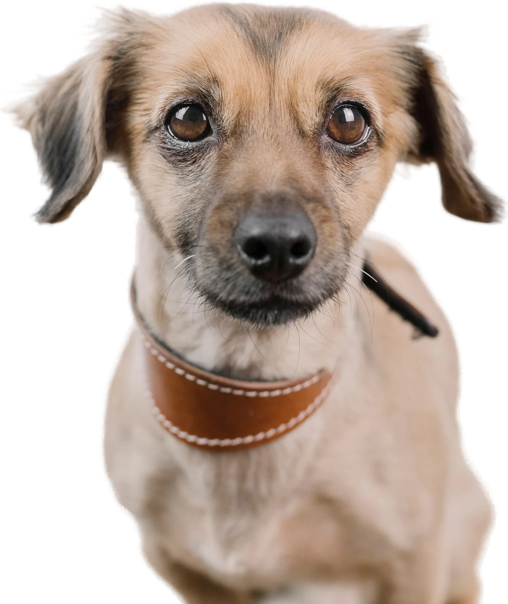
01Capítulo 1 · Aberturaobjetivo do guia
Objetivo do guia
Este guia reúne o que fazer dentro da loja para que o produto Ourofino Pet esteja lá, fácil de achar, com preço e bem explicado. Serve para estudar no treinamento e para consultar no celular, no meio da visita.
1Objetivo do guia
Serafina
Antes da primeira loja
Antes de a gente entrar na primeira loja, deixa eu te mostrar como este guia funciona. São poucos minutos agora. Eles poupam muita procura depois, na frente da prateleira, com o celular na mão.
1Objetivo do guia
Para que serve este guia
O mesmo produto vende bem em uma loja e quase nada na loja da esquina. Muitas vezes, a diferença está no que acontece lá dentro. Em uma, o produto está à vista, com preço e junto da sua categoria. O balconista sabe para que ele serve. Na outra, ficou no fundo do estoque ou atrás de outra marca.
Este guia ensina o que fazer para que toda loja atendida pela Ourofino Pet receba o mesmo cuidado. Vale para qualquer cidade, qualquer distribuidor e qualquer pessoa que faça a visita.
Na prática
Duas lojas do bairro compraram WellPET no mesmo mês. Em uma, ele está atrás do balcão, com preço, e o balconista oferece. Na outra, ficou no estoque. A primeira tende a pedir de novo. A segunda fica com estoque parado.
Lembre-se. O que acontece na prateleira decide se a loja pede de novo.
1Objetivo do guia
Do que o guia cuida em cada loja
Produto na prateleira
Cada produto herói no seu lugar, sem buraco, e reposto a partir do estoque quando falta.
Fácil de achar
Na altura dos olhos, de frente para o tutor, junto da categoria e ao lado da marca concorrente.
Preço à vista
Etiqueta legível na frente de cada produto. Sem preço, o tutor precisa perguntar, e nem sempre pergunta.
Validade em dia
Vencimento mais próximo na frente e produto vencido fora da prateleira, com aviso à loja.
Material no lugar certo
Cada peça perto do produto que ela anuncia. Nunca na porta do consultório.
Equipe informada
O balconista sabe explicar o produto em uma frase quando o tutor pergunta.
1Objetivo do guia
R$ 36,6 bilhõesEm 2024, petshops pequenos e médios venderam R$ 36,6 bilhões dos R$ 75,4 bilhões do setor pet. Clínicas e hospitais veterinários venderam outros R$ 13,4 bilhões.
Fonte: Abinpet e Instituto Pet Brasil, balanço do setor pet de 2024, divulgado pela Panorama Pet Vet em abril de 2025.
Por que o trabalho dentro da loja pesa tanto
Quase metade do que o setor pet vende no Brasil passa por petshops pequenos e médios, as lojas de bairro. Somando as clínicas e os hospitais veterinários, a conta chega a dois terços. São justamente as lojas que este guia cobre.
Nessas lojas, ninguém da marca está presente todo dia. Cada loja arruma a prateleira do seu jeito, e o produto que ninguém acompanha some atrás dos outros. A sua visita é o momento em que a Ourofino Pet está ali.
1Objetivo do guia
Quem usa o guia
Quem
Para quê
Comece por
Promotor
Saber o que fazer em cada visita e consultar no meio da loja
Trade é um assunto novo em saúde animal. Tem gente com anos de merchandising e tem gente no primeiro emprego. Tem vendedor que bate a meta todo mês e nunca ouviu falar de FIFO ou de wobbler.
Por isso o guia começa do zero. Cada termo vem explicado na primeira vez que aparece, sempre com um exemplo de loja pet. Se uma explicação parecer simples demais para você, siga em frente. Para outra pessoa, ela pode ser justamente a que faltava.
Lembre-se. Ninguém precisa ter vergonha de consultar o básico.
1Objetivo do guia
Como usar os botões do guia
1Computador ou tablet deitadoUm slide por vez. Passe com as setas da barra de baixo, com as setas do teclado ou deslizando o dedo para o lado.
2Celular em péCada slide ocupa a tela inteira. Deslize o dedo para cima para ir ao próximo e para baixo para voltar.
3ÍndiceAbra o Índice pela barra de baixo para ver todos os capítulos e ir direto ao assunto do momento.
4Contador e barra verdeO número mostra em que slide você está. A barra verde, logo acima, mostra quanto do guia você já percorreu.
5RevisãoLiga as notas que a Ourofino ainda está conferindo. No dia a dia da loja, deixe desligado.
6PDFPrepara o guia para imprimir ou salvar em PDF, com um slide por página.
1Objetivo do guia
No celular, durante a visita
Na loja, você não tem tempo de ler um capítulo inteiro. Use o guia para consultar o ponto exato da dúvida. Se não lembrar onde vai um material, abra o Índice e vá direto a Materiais de PDV. Se a prateleira estiver bagunçada, O básico da gôndola mostra a ordem de arrumar.
Com pressa, comece pelo resumo, no último slide de cada capítulo. O checklist da visita fica no fim do guia. O que você marca nele fica salvo no navegador do celular.
Na prática
Deixe o guia na tela inicial do celular. No iPhone, abra no Safari, toque em Compartilhar e em Adicionar à Tela de Início. No Android, abra no Chrome, toque nos três pontinhos e em Adicionar à tela inicial.
1Objetivo do guia
O mapa do guia
Assunto
Capítulos
Abra quando
A visita
2 Contato no PDV, 8 Relacionamento em loja, 9 Postura em campo
For preparar a visita ou tiver dúvida de como agir com a equipe da loja
Fundamentos
3 O que é trade marketing, 4 O básico da gôndola, 7 Ponto natural e ponto extra
Estiver começando ou precisar arrumar uma prateleira
Materiais e cross
5 Materiais de PDV, 6 Cross merchandising e cross selling
For instalar uma peça ou pensar onde mais o produto pode aparecer
A loja e os produtos
10 Conhecendo a loja e quem decide, 11 Como falar de produto: CBV, 12 Produtos heróis, 13 Prateleira ideal
For falar de um produto ou organizar uma categoria
Fechamento
14 Considerações finais, checklist, glossário e teste final
Quiser conferir a visita, achar um termo ou testar o que aprendeu
1Objetivo do guia
No treinamento, do começo ao fim
No treinamento, leia os capítulos na ordem. Ela segue a lógica do trabalho. Primeiro vem a visita como um todo. Depois, os fundamentos de trade, a gôndola, os materiais e o cross. Em seguida, o relacionamento e a postura na loja. Por fim, quem decide, os produtos e a prateleira ideal.
Cada capítulo termina com um ou dois testes de situação e um resumo. No fim do guia, o teste final cobre todos os capítulos. Para quem treina equipe, um capítulo por encontro funciona bem: leitura, conversa sobre lojas reais e os testes feitos em grupo.
Na prática
Os testes não valem nota. A explicação que aparece depois da resposta mostra por que a certa é a certa. É ali que a regra fica na cabeça.
Lembre-se. No celular, consulte o ponto da dúvida. No treinamento, leia na ordem.
1Objetivo do guia
Os slides que explicam
Conceito
Explica uma ideia por inteiro: o que é, por que importa e como aparece na loja.
Por quê
Mostra o motivo por trás de uma regra, com um dado e a fonte de onde ele veio.
Termo
Define uma palavra do trade em linguagem simples, com um exemplo de loja pet.
Figura
Uma foto ou um esquema grande, com a explicação do que observar nele.
Tabela
Põe situações lado a lado, como os tipos de loja ou quem decide em cada uma.
Na prática
A faixa com um exemplo concreto de loja, logo abaixo da explicação.
1Objetivo do guia
Serafina
Um conselho sobre os testes
Se eu pudesse te dar um conselho sobre este guia, seria este: não pula os testes. Cada um é uma situação que eu já vi acontecer em loja. Errar aqui, no celular, não custa nada. Na loja, na frente do gerente, é bem mais chato.
1Objetivo do guia
Os slides que mostram o que fazer
Passo a passo
A tarefa na ordem em que você executa, um passo por linha.
Certo e errado
Duas colunas para conferir de olho, ali na frente da prateleira.
Erro comum
Um erro que acontece de verdade nas lojas e o jeito certo de fazer.
Fala pronta
Frases para a conversa com o balconista ou com o gerente. Adapte ao seu jeito de falar.
Teste
Uma situação de loja com três respostas. Toque na que você escolheria.
Resumo e Lembre-se
O resumo fecha cada capítulo. A faixa Lembre-se, no pé de alguns slides, guarda a ideia principal.
1Objetivo do guia
O que este guia não cobre
Conversa comercial
Preço, prazo, desconto, bonificação e espaço pago na loja são assunto do time comercial.
Venda pela internet
Loja virtual e marketplace ficam fora deste guia.
Dose e tratamento
Quantidade, idade, forma de uso e indicação são orientação do médico-veterinário e da bula.
Planograma de cada loja
O guia mostra a prateleira ideal em visão geral. O desenho exato de cada loja segue a orientação do seu supervisor.
1Objetivo do guia
Quando a loja puxa um assunto de fora do guia
Evite
Prometo desconto, brinde ou bonificação para resolver na hora
Sugiro quantidade de comprimido ou tempo de tratamento
Dou opinião sobre o preço que a loja cobra
Faça
Anoto o pedido com as palavras do lojista e aviso o meu supervisor no mesmo dia
Explico que esse assunto é com o time comercial e que vou passar o pedido adiante
Para dose e forma de uso, digo que quem orienta é o veterinário e a bula
Lembre-se. Se o assunto não é seu, anote o pedido e avise o seu supervisor.
1Objetivo do guia
Teste rápido
Você está na loja, o gerente liberou dez minutos e você não lembra onde vai o wobbler que trouxe. O que faz?
O guia serve para consultar no meio da visita. Um minuto de consulta evita material no lugar errado e trabalho dobrado na próxima visita.
1Objetivo do guia
Teste rápido
Um tutor pergunta se pode dar Top Dog para o filhote de três meses dele. O que você responde?
Idade, dose e forma de uso são orientação técnica. Você cuida do produto na loja e encaminha a dúvida para quem tem formação para responder.
1Objetivo do guia
O que fica deste capítulo
O guia cuida do produto na loja: presente, fácil de achar, com preço e explicado.
No celular, consulte pelo Índice. No treinamento, leia na ordem.
Cada tipo de slide tem uma função: explicar, mostrar como fazer ou testar.
Conversa comercial, venda pela internet e dose ficam fora deste guia.
Assunto de fora: anote o pedido e avise o seu supervisor.
A visita começa antes de você entrar na loja e termina depois que você sai. Quem segue a mesma ordem em toda loja esquece menos e deixa claro, para a equipe da loja, o que veio fazer.
2Contato no PDV: antes, durante e depois
Serafina
A visita que eu não preparei
Já cheguei em loja sem lembrar o que tinha ficado combinado na visita anterior. O gerente lembrava, eu não, e fiquei sem graça na frente dele. Desde então, eu preparo cada visita antes de sair e sigo a mesma ordem lá dentro. Nas primeiras semanas parece burocracia. Depois vira automático.
2Contato no PDV: antes, durante e depois
A visita em três momentos
Antes de sair, você prepara a visita: histórico, pendências, objetivo, material e rota. Dentro da loja, segue oito passos na mesma ordem, da apresentação à despedida. Depois, registra o que viu, avisa o supervisor do que não depende de você e deixa a próxima visita encaminhada.
Antesfora da loja
01Defina o objetivo da visita
02Separe material e kit
03Revise as pendências da última visita
04Confira a rota e os horários
Durantedentro da loja, sempre nesta ordem
01Chegue e se apresente
02Leia a loja
03Fotografe antes
04Corrija o básico
05Execute a prioridade do dia
06Converse com a equipe
07Fotografe depois
08Encerre com o responsável
Depoisno mesmo dia
01Registre a visita com as fotos
02Avise o supervisor sobre pendências
03Anote o que levar na próxima vez
2Contato no PDV: antes, durante e depois
Pré-visita: a visita começa antes da porta
Pré-visita é a preparação que você faz antes de sair. Você revê o que aconteceu na última visita, o que ficou combinado e o que vai fazer hoje.
O dono da loja vê o total que vendeu no mês. Ele não vê que a prateleira de antipulgas ficou vazia por dois dias. Também não vê o Banni 3 escondido atrás de outra marca. Esse detalhe só você tem. Quem chega preparado gasta o tempo da loja executando, sem perder minutos para descobrir o que fazer.
Na prática
Antes de sair, abra as fotos e as anotações da última visita a cada loja da rota. Anote, para cada uma, o objetivo de hoje e o material que vai levar.
Lembre-se. Prepare cada loja antes de sair: histórico, pendências e objetivo.
2Contato no PDV: antes, durante e depois
Pré-visita em cinco passos
1Revise o históricoAbra as fotos e as anotações da última visita. Se tiver os pedidos do distribuidor, veja o que a loja parou de comprar.
2Liste as pendênciasAnote o que você prometeu levar ou responder e o que ficou sem solução: falta, preço, material quebrado.
3Defina o objetivoEscolha uma prioridade para a loja, concreta o bastante para aparecer na foto de depois.
4Separe o materialConfira a campanha que está valendo e leve só as peças desta loja, em bom estado, mais o seu kit.
5Monte a rotaDefina a ordem das lojas, o tempo em cada uma e o horário em que cada loja prefere receber você.
2Contato no PDV: antes, durante e depois
o que é
Mix
Mix é o conjunto de produtos de uma marca que a loja tem à venda. No histórico, veja o mix da Ourofino Pet em cada loja: o que ela tem, o que parou de comprar e o que nunca teve.
Exemplo
A loja vende WellPET e Top Dog, mas nunca teve Banni 3. O tutor de gato não acha o Banni 3 ali. Anote no registro: é informação para quem cuida do pedido.
2Contato no PDV: antes, durante e depois
Objetivo claro e objetivo vago
Evite
Dar uma geral na loja
Ver como está a prateleira
Fazer o que der tempo
Faça
Banni 3 com preço e wobbler do Top Dog instalado na prateleira dele
Prateleira de antipulgas sem buraco e com preço em todos os produtos
Resposta à dúvida que o balconista deixou na última visita
Lembre-se. Um objetivo por loja, que caiba em uma frase.
2Contato no PDV: antes, durante e depois
O kit da visita
Celular carregado
Para as fotos, o registro e a consulta ao guia. Leve carregador ou bateria extra para as últimas lojas.
Uniforme e crachá
A equipe da loja sabe quem você é antes mesmo de você falar.
Materiais de PDV
Só os desta loja e da campanha atual, sem dobra, rasgo ou sujeira.
Fita dupla face
Para fixar material sem furar nem manchar a gôndola da loja.
Flanela
Para tirar o pó da embalagem e da prateleira antes da foto de depois.
Caneta e bloco
Para anotar nome, pedido e pendência quando o celular não ajudar.
2Contato no PDV: antes, durante e depois
Visita: oito passos, sempre na mesma ordem
Dentro da loja, você segue oito passos, na mesma ordem, em toda visita. A ordem tem uma lógica. Primeiro você se apresenta, porque está na casa de alguém. Depois olha e fotografa antes de mexer, para registrar o ponto de partida.
Em seguida, resolve o que faz o tutor deixar de comprar: falta, sujeira, preço e validade. Só então entra o que ajuda a vender mais, como material novo e ponto extra. Por último, conversa com a equipe e fecha a visita com o responsável.
Na prática
Se o tempo apertar, deixe a prioridade do dia para a próxima visita e mantenha o básico e as fotos. Avise o responsável do que ficou para depois e anote no registro.
2Contato no PDV: antes, durante e depois
Passos 1 a 4: da porta à prateleira em ordem
1Chegue e se apresenteEspere o atendimento acabar. Diga nome, empresa, o que veio fazer e quanto tempo leva. A fala completa está no capítulo 8.
2Leia a lojaAntes de mexer em qualquer produto, dê uma volta de cinco minutos. Passe pela ração, farmácia, higiene, caixa e, com licença, pelo estoque.
3Fotografe antesA prateleira inteira, de frente, a uns dois passos de distância. É o registro do ponto de partida.
4Corrija o básicoNesta ordem: produto em falta, limpeza, preço, validade e frente. O capítulo 4 explica cada um.
2Contato no PDV: antes, durante e depois
11%Em oito hospitais de oito países, as equipes passaram a seguir um checklist de 19 itens. As complicações depois da cirurgia caíram de 11% para 7%.
Fonte: Haynes e outros, “A Surgical Safety Checklist to Reduce Morbidity and Mortality in a Global Population”, New England Journal of Medicine, 2009.
Por que a mesma ordem em toda loja
Na loja, a atenção vai para o que aparece primeiro: o tutor no balcão, o gerente com pressa, o display novo na sua mão. É aí que o passo simples fica para trás, como a foto de antes ou a etiqueta de preço.
Isso acontece com gente experiente em qualquer profissão, até em centro cirúrgico. Uma ordem fixa tira esse peso da memória. Você não precisa lembrar o que vem depois: só segue o próximo passo.
Lembre-se. Siga a mesma ordem em toda loja, até nas que você já conhece bem.
2Contato no PDV: antes, durante e depois
Passos 5 a 8: da prioridade à despedida
1Execute a prioridade do diaMaterial novo, ponto extra ou cross. Só depois que a prateleira está cheia, limpa, com preço e na validade.
2Converse com a equipeNum momento sem cliente, passe uma informação útil ao balconista. Uma por visita basta.
3Fotografe depoisDo mesmo lugar, na mesma altura e no mesmo ângulo da foto de antes.
4Encerre com o responsávelConte o que fez, o que ficou pendente e quando volta. Agradeça antes de sair.
2Contato no PDV: antes, durante e depois
O que olhar na volta pela loja
O produto está lá?
Procure cada herói no lugar dele. Buraco onde deveria ter produto se chama ruptura. Anote cada um.
Tem no estoque?
Para cada buraco, pergunte se tem caixa guardada. A resposta muda o que você faz depois.
Tem preço?
Etiqueta na frente de cada produto, legível e com o valor que a loja cobra no caixa.
Validade em ordem?
Pegue duas ou três caixas e olhe a data. O vencimento mais próximo vai na frente.
Material no lugar?
Wobbler, display e cartaz inteiros, da campanha atual e perto do produto que anunciam.
O que mudou?
Compare com a foto da última visita. Produto que trocou de lugar ou novidade da concorrente entra no registro.
2Contato no PDV: antes, durante e depois
70%Num estudo mundial sobre ruptura no varejo, de 70% a 75% das faltas começavam dentro da própria loja. As maiores causas: pedido mal calculado pela loja (47%) e prateleira mal abastecida (25%).
Fonte: Gruen, Corsten e Bharadwaj, “Retail Out-of-Stocks”, estudo da FMI, GMA e CIES em 29 países, 2002.
Por que olhar o estoque antes de anotar a falta
Buraco na prateleira pode ter duas causas. Na primeira, o produto está na loja, guardado no estoque, e ninguém repôs. Na segunda, a loja não tem o produto porque pediu pouco ou deixou de pedir.
Cada causa pede uma solução diferente. Com caixa no estoque, peça autorização, reponha e mostre ao balconista onde o produto fica. Sem caixa, registre a falta e avise o supervisor, porque a solução passa pelo pedido. Anotar só “faltou” não ajuda ninguém a resolver.
2Contato no PDV: antes, durante e depois
Foto de antes e foto de depois
Evite
Foto de perto que mostra uma caixa só
Foto de lado, que esconde metade da prateleira
Rosto de cliente ou de funcionário na imagem
Faça
Prateleira inteira no quadro, de frente, a uns dois passos de distância
Foto de depois tirada do mesmo lugar e na mesma altura da foto de antes
Preço e material aparecendo na mesma imagem
Lembre-se. A foto de depois só serve se for tirada do mesmo lugar que a de antes.
2Contato no PDV: antes, durante e depois
Erro comum
O material bonito na prateleira vazia
O que acontece
O promotor chega com o material novo da campanha e vai direto instalar. Meia hora depois, o material está bonito, e a prateleira de vermífugos continua com dois buracos e sem preço. O material chama o tutor para uma prateleira onde falta produto.
Faça assim
Siga a ordem: leia a loja, fotografe e corrija o básico. Produto, limpeza, preço, validade e frente vêm primeiro. Material, ponto extra e cross entram depois, sobre uma prateleira em ordem.
2Contato no PDV: antes, durante e depois
Uma informação útil por visita
você
“Tem um minuto? Queria te passar uma coisa rápida sobre o EnziClim.”
balconista
“Pode falar, agora tá tranquilo.”
você
“Quando o tutor reclamar de cheiro de xixi em casa, mostra o EnziClim. Ele tem microrganismos vivos que agem no odor e na mancha de urina, fezes e vômito.”
balconista
“E onde ele fica?”
você
“Aqui na higiene do ambiente, perto dos tapetes higiênicos. Deixei de frente para facilitar.”
2Contato no PDV: antes, durante e depois
Teste rápido
Você entra na loja e vê na hora que a prateleira de antipulgas está bagunçada. O balconista está atendendo um tutor. O que vem primeiro?
Você está na casa de alguém. Fotografar ou mexer antes de se apresentar deixa a equipe desconfiada. A foto de antes vem logo depois da apresentação e da volta pela loja.
2Contato no PDV: antes, durante e depois
Pós-visita: o que você registra vira a próxima visita
A visita não acaba quando você sai pela porta. O que você viu na loja só chega ao supervisor, ao distribuidor e à Ourofino se estiver registrado. Uma falta que ninguém anotou continua lá, porque ninguém soube dela.
Sem registro, a próxima visita também começa do zero, sem saber o que ficou combinado. Por isso o registro sai no mesmo dia, de preferência antes da próxima loja, enquanto os detalhes ainda estão frescos.
Na prática
Ainda no carro ou no ponto de ônibus, anote as faltas, os preços que faltavam e o que você combinou. Anotar ali é mais rápido do que tentar lembrar à noite, depois de várias lojas.
2Contato no PDV: antes, durante e depois
Pós-visita em quatro passos
1Registre a visitaNo canal da sua operação, anote o que encontrou e o que fez, loja por loja, no mesmo dia.
2Anexe as fotosAntes e depois, do mesmo ângulo, com o nome da loja e a data. Apague as que mostram pessoas.
3Avise o supervisorO que não depende de você: falta que se repete, produto vencido, loja que não deixou trabalhar, pedido comercial.
4Prepare a próximaDeixe escrito o objetivo da próxima visita e o que você prometeu levar ou responder.
Lembre-se. O que não está registrado não chega a quem pode resolver.
2Contato no PDV: antes, durante e depois
O que avisar ao supervisor no mesmo dia
O que você encontrou
Por que avisar
O que levar no aviso
Falta que aparece de novo na visita seguinte
Pode ser pedido baixo ou falta no distribuidor
Foto, nome do produto e se tem caixa no estoque
Produto vencido ou danificado em quantidade
A troca depende da loja e do distribuidor
Foto, quantidade e validade
Loja que não deixou você trabalhar
O supervisor entende o motivo e combina com a loja
Data, hora e quem atendeu
Pergunta técnica que você não respondeu
Quem responde é o veterinário ou o material oficial
A pergunta, do jeito que foi feita
Pedido de preço, prazo ou desconto
É assunto do time comercial
O pedido, com as palavras do lojista
2Contato no PDV: antes, durante e depois
Teste rápido
Pela terceira visita seguida, o espaço do Banni 3 está vazio, e não tem caixa no estoque. O que você faz?
Falta repetida sem caixa no estoque aponta para o pedido. Esperar a próxima visita deixa o tutor de gato sem produto até lá. Avisando no mesmo dia, quem cuida do pedido age antes.
2Contato no PDV: antes, durante e depois
O que fica deste capítulo
Antes de sair: histórico, pendências, objetivo, material e rota.
Na loja, oito passos, sempre na mesma ordem.
Primeiro o básico. Material e ponto extra só depois.
Foto de antes e de depois, do mesmo lugar e ângulo.
Registro e aviso ao supervisor no mesmo dia.
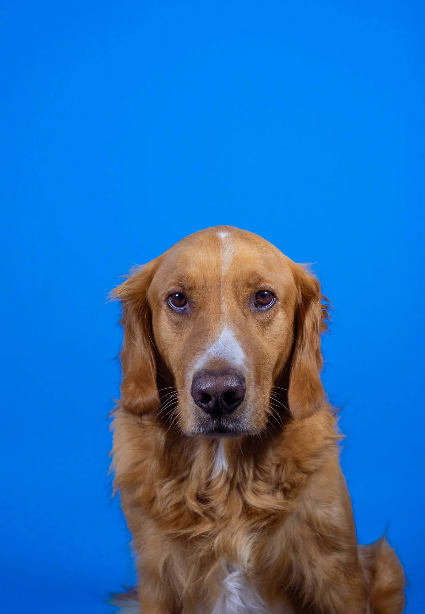
03Capítulo 3 · Fundamentoso que é trade
O que é trade marketing
Trade marketing é o cuidado com tudo o que faz o tutor encontrar e escolher o produto dentro da loja. Ele acontece em toda visita, em qualquer dia da semana.
3O que é trade marketing
Serafina
Eu também achava que trade era o sábado
Quando comecei, eu achava que trade era passar o sábado na loja abordando tutor com folheto. Levei um tempo pra entender que o sábado só rende quando a prateleira está certa a semana inteira. É sobre isso que eu quero conversar com você agora.
3O que é trade marketing
o que é
Trade marketing
É o trabalho que faz o tutor encontrar e escolher o produto no ponto de venda (PDV). PDV é a loja onde ele compra. O trade cuida de onde o produto fica, de como aparece e de quem sabe explicar para que serve.
Exemplo
O WellPET está na prateleira dos antipulgas para cão, de frente, com preço e na validade. O balconista sabe que é um comprimido palatável contra pulga e carrapato. Tudo isso é trabalho de trade.
3O que é trade marketing
O que o trade cuida em toda loja
Produto na prateleira
Tem produto, na quantidade certa e dentro da validade. Quando falta, você anota e avisa.
Fácil de achar
Junto da categoria dele, na altura dos olhos e de frente para o corredor.
Preço à vista
Etiqueta embaixo do produto certo. Sem preço, o tutor precisa perguntar, e nem sempre há alguém livre para responder.
Material no lugar certo
Cada peça tem um lugar e um motivo. Fora dele, a peça confunde o tutor.
Equipe da loja sabendo
O balconista entende o produto e consegue explicar para que ele serve.
Lembre-se. O trade acontece em toda visita, com ou sem ação especial na loja.
3O que é trade marketing
O que a promotora de sábado sozinha não resolve
Muita gente acha que trade é colocar uma promotora na sexta e no sábado para abordar o tutor. Essa ação existe e ajuda a vender. Só que ela é uma parte do trabalho, e depende do que acontece no resto da semana.
A loja vende todos os dias, e na maior parte deles ninguém da marca está lá dentro. Nesses dias, quem vende é a prateleira: produto no lugar, de frente e com preço.
A abordagem também depende da prateleira. O tutor ouve falar do produto no sábado, vai procurar e precisa encontrar. Se não encontra, leva a marca que estava no lugar.
Na prática
Quando alguém disser que trade é a promotora do sábado, concorde que ela ajuda. Depois mostre a prateleira numa segunda-feira e pergunte se o tutor acharia o produto ali.
3O que é trade marketing
Trade de evento e trade de rotina
Evite
Aparecer só no fim de semana, abordar tutores e ir embora
Fazer ação com folheto enquanto o produto está escondido ou sem preço
Medir o trabalho só pelo movimento do sábado
Faça
Visitar a loja com frequência e deixar a prateleira certa a cada visita
Conferir produto, preço e validade antes de pensar em ação especial
Usar o sábado para reforçar uma prateleira que já está em ordem
3O que é trade marketing
76%Em supermercados dos Estados Unidos, 76% das decisões de compra foram tomadas dentro da loja.
Fonte: POPAI, 2012 Shopper Engagement Study, com 2.400 compradores entrevistados antes e depois das compras.
Por que a venda se decide na frente da prateleira
Boa parte dos tutores entra na loja sabendo do problema e sem ter escolhido a marca. O cão está com pulga ou chegou a hora do vermífugo. A escolha da marca acontece ali, olhando a prateleira ou ouvindo o balconista.
Por isso o que o tutor vê nesse momento pesa tanto. Produto no lugar, de frente e com preço entra na escolha. Produto escondido fica de fora.
Lembre-se. A escolha da marca acontece na loja, na frente da prateleira e do balcão.
3O que é trade marketing
O caminho do produto até a casa do tutor
O produto sai da fábrica da Ourofino e vai para o distribuidor. O distribuidor vende para a loja, e a loja vende para o tutor.
Repare nos dois nomes do desenho. Sell-in é a venda que entra na loja, e sell-out é a venda que sai pelo caixa. O seu trabalho acontece entre os dois.
Ourofinofabrica o produto
abastecimento
Distribuidorcompra, estoca e entrega
sell-in
Lojaexpõe, orienta e vende
sell-out
Tutorleva para casa e usa no pet
3O que é trade marketing
Sell-in e sell-out, lado a lado
Sell-in
Sell-out
O que é
A loja compra o produto
O tutor compra o produto
De quem compra
Do distribuidor
Da loja
Onde você vê
No pedido do distribuidor
No caixa e no estoque que diminui
O que você faz
Confere se o que entrou chegou à prateleira
Garante que o tutor encontre e escolha
Lembre-se. O sell-in enche o estoque da loja. O sell-out esvazia a prateleira e faz a loja comprar de novo.
3O que é trade marketing
Uma loja, dois cenários (números de exemplo)
Os números deste exemplo foram criados para mostrar a conta. Não são dados de mercado.
Em março, um petshop de bairro compra 24 caixas de Top Dog do distribuidor. Isso é sell-in.
No cenário A, as caixas vão para a prateleira de baixo, atrás de outra marca e sem preço. No mês, os tutores levam 6. Sobram 18, e em abril o dono não faz pedido.
No cenário B, o Top Dog fica na altura dos olhos, junto dos vermífugos, com preço. O balconista sabe explicar o produto. Os tutores levam 20 caixas, e em abril a loja pede de novo.
Na prática
O sell-in foi igual nos dois cenários. O que mudou foi a prateleira, e é ela que decide se haverá um segundo pedido.
3O que é trade marketing
O mesmo exemplo em números (ilustrativos)
Cenário A
Cenário B
Sell-in de março (a loja comprou)
24 caixas
24 caixas
Sell-out de março (os tutores levaram)
6 caixas
20 caixas
Sobrou no estoque
18 caixas
4 caixas
Pedido de abril
Nenhum
20 caixas
3O que é trade marketing
o que é
Giro
Giro é a velocidade com que o produto sai da prateleira e o estoque da loja se renova. Produto de giro alto sai rápido e volta a ser pedido. Produto de giro baixo fica parado, ocupando espaço e o dinheiro que a loja investiu.
Exemplo
No exemplo anterior, as 24 caixas do cenário A duram quatro meses. No cenário B, duram pouco mais de um mês. O Top Dog do cenário B tem giro alto.
3O que é trade marketing
Como o giro vira pedido
1O tutor levaCada caixa que passa pelo caixa é sell-out. A prateleira fica com uma unidade a menos.
2A loja repõeO balconista traz o produto do depósito para a prateleira. O estoque da loja diminui.
3O dono faz o pedidoCom o estoque baixo, a loja compra de novo do distribuidor. Esse pedido é o próximo sell-in.
4O distribuidor senteO vendedor vê o pedido daquela loja crescer, parar ou sumir. Produto que gira volta no pedido todo mês.
5A Ourofino planejaCom o que sai das lojas, a Ourofino planeja produção, campanhas e materiais para os próximos meses.
Lembre-se. A loja só compra de novo o que vendeu.
3O que é trade marketing
Erro comum
Vender para a loja e esquecer a prateleira
O que acontece
O vendedor fecha um pedido grande e bate a meta do mês. Ninguém volta para ver onde as caixas foram parar. Elas ficam no depósito ou no fundo da prateleira, e no mês seguinte a loja não compra.
Faça assim
Na visita seguinte, procure o produto que a loja comprou. Confira se ele saiu do depósito, se está no lugar dele na prateleira, com preço e de frente. Sell-in só vira sell-out quando o tutor encontra o produto.
3O que é trade marketing
Canais: os três tipos de loja deste guia
Petshop
A venda de produtos é o centro do negócio. Pode ter banho e tosa, mas não tem consultório.
Petshop com clínica
A loja continua sendo o centro, e existe um consultório veterinário dentro dela.
Clínica veterinária com petshop
O atendimento veterinário é o centro. A loja existe para complementar a consulta.
3O que é trade marketing
O que muda de um tipo de loja para outro
No petshop, o tutor anda pelos corredores e escolhe sozinho boa parte do que leva. Ali, a gôndola arrumada faz a maior parte do trabalho.
Na clínica com petshop, muita compra começa na conversa do consultório. O tutor sai da consulta e vai à recepção ou à farmácia pedir o que ouviu. Ali pesam a equipe que sabe explicar o produto e o material perto do balcão.
O petshop com clínica fica no meio do caminho: tem corredor para o tutor circular e consultório que orienta. O capítulo 10 mostra como reconhecer cada um.
Na prática
Antes da visita, descubra em qual dos três tipos a loja se encaixa. Isso muda onde você começa: pela gôndola ou pelo balcão.
3O que é trade marketing
O que cabe a você dentro da loja
Evite
Indicar dose ou tratamento para o pet de um tutor
Mexer, esconder ou tirar produto da marca concorrente
Montar material ou ponto extra sem o ok da loja
Faça
Conferir se o produto está na prateleira, com preço e na validade
Explicar o produto ao balconista usando o material oficial da Ourofino
Registrar com foto e avisar o supervisor do que faltou
Lembre-se. Dúvida sobre dose ou tratamento, o tutor tira com o veterinário.
3O que é trade marketing
Serafina
No dia da visita, quem cuida da marca é você
Na maioria dos dias, ninguém da Ourofino passa por aquela loja. No dia da sua visita, é você quem cuida da marca lá dentro. O que você arruma e explica é o que o tutor vai encontrar até a próxima visita.
3O que é trade marketing
Teste rápido
Uma loja comprou 20 unidades de WellPET do distribuidor há dois meses e ainda tem 18 no estoque. O que está acontecendo?
A loja comprou do distribuidor, então houve sell-in. Os tutores é que não estão levando. Procure o motivo: produto escondido, sem preço, fora da categoria ou balconista que não conhece o produto.
3O que é trade marketing
Teste rápido
O gerente comenta que trade é a promotora que vem no sábado. Durante a semana, o produto fica no fundo da prateleira e sem preço. O que você faz?
A ação de sábado ajuda, mas depende da prateleira. Com o produto à vista e com preço, a loja vende nos outros dias também, e o sábado rende mais.
3O que é trade marketing
O que levar deste capítulo
Trade é fazer o tutor encontrar e escolher o produto na loja
A ação de sábado ajuda quando a prateleira está certa a semana toda
Sell-in é a loja comprando; sell-out é o tutor levando
A loja só compra de novo o que vende: isso é giro
Em cada visita, você confere, arruma, explica e avisa
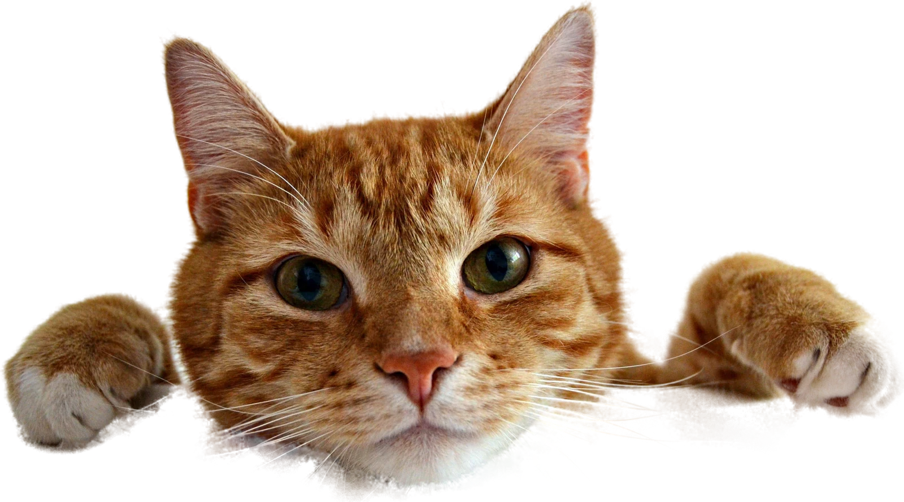
04Capítulo 4 · Fundamentoso básico da gôndola
O básico da gôndola
Antes de qualquer material ou ponto extra, a gôndola precisa de produto no lugar, limpo, com preço e na validade. Aqui você aprende a deixar a prateleira assim e entende por que cada detalhe pesa na escolha do tutor.
4O básico da gôndola
Serafina
Eu começo olhando de longe
Quando chego numa loja, a primeira coisa que faço é parar a uns três passos da gôndola. Olho como um tutor olharia, antes de encostar em qualquer produto. Em poucos segundos dá pra ver se falta produto e se a marca aparece.
4O básico da gôndola
O que o tutor vê numa gôndola sem cuidado
Gôndola é o móvel de prateleiras onde o produto fica exposto. Nesta, o tutor encontra buracos onde faltou produto, caixas caídas, produto sem preço e marcas misturadas.
Antes de seguir, tente achar cada um desses problemas na imagem. No fim do capítulo, você vê a mesma gôndola arrumada.
4O básico da gôndola
o que é
Ponto natural
É o lugar fixo do produto dentro da loja, junto dos outros produtos que resolvem o mesmo problema. É onde o tutor vai direto, sem perguntar. Funciona como o endereço do produto: o tutor volta sempre ao mesmo lugar.
Exemplo
O Top Dog, vermífugo palatável para cães, fica na farmácia ao lado dos outros vermífugos para cão. O Herbalvet T.A., desinfetante, fica na higiene do ambiente.
4O básico da gôndola
Os quatro básicos, nesta ordem
1. Disponível
O produto está na prateleira, na quantidade certa. Quando falta, o nome disso é ruptura.
2. Limpo
Embalagem sem poeira, sem amassado e sem etiqueta velha por cima. Caixa suja parece produto parado ou velho.
3. Com preço
Etiqueta embaixo do produto certo, legível de longe. Sem preço, o tutor precisa perguntar, e nem sempre há quem responda.
4. Na validade
Nada vencido na prateleira, e o que vence antes fica na frente.
Lembre-se. Confira os quatro sempre nesta ordem. Se o tempo acabar, o mais importante já foi feito.
4O básico da gôndola
31%Quando o produto falta, 31% dos compradores vão a outra loja, 26% trocam de marca e 9% não compram nada.
Fonte: Gruen, Corsten e Bharadwaj, “Retail Out-of-Stocks”, estudo da FMI, GMA e CIES com 71 mil consumidores em 29 países, 2002.
Por que um buraco na prateleira custa mais que uma venda
Quando o tutor não acha o produto, ele resolve na hora. Leva outra marca, vai a outra loja ou deixa para depois.
O problema continua depois desse dia. Quem trocou de marca e gostou volta procurando a outra.
Quem foi a outra loja pode passar a comprar lá. Assim, uma semana de ruptura pode custar um cliente.
Por isso a primeira coisa que você confere é se o produto está lá. Material, frente e bloco vêm depois.
4O básico da gôndola
Achou um buraco na prateleira: o que fazer
1Anote antes de arrumarEscreva qual produto falta e em que prateleira. Se arrumar primeiro, você pode esquecer de avisar.
2Pergunte pelo estoquePergunte ao balconista se tem o produto no depósito. Muitas vezes ele está na loja e só não chegou à prateleira.
3Peça para reporSe tem no depósito, peça para trazer. Ajude a montar no ponto natural, com a validade mais curta na frente.
4Se não tem, aviseConte ao balconista que o produto acabou e registre no relatório da visita para o seu supervisor.
5FotografeFoto da prateleira com o buraco. Ela mostra ao supervisor e ao distribuidor o que precisa entrar no pedido.
4O básico da gôndola
o que é
FIFO
Sigla em inglês de first in, first out: o primeiro que entra é o primeiro que sai. Na prateleira, o produto que vence antes fica na frente, para ser vendido primeiro.
Exemplo
Chegaram caixas novas de Top Dog. Antes de guardar, você confere as datas, puxa para a frente as que vencem antes e coloca as novas atrás.
4O básico da gôndola
Como girar a validade na prateleira
Tire os produtos, leia a validade e monte de novo: vencimento mais próximo na frente, mais distante atrás.
Produto vencido não pode ser vendido e vira prejuízo para a loja. Se o tutor encontra um, perde a confiança na marca.
O erro mais comum é a reposição com pressa, com a caixa nova na frente.
Lembre-se. Produto vencido: separe e entregue ao balconista. Você não descarta nada por conta própria.
4O básico da gôndola
o que é
Frente (facing)
Frente, ou facing, é cada unidade do produto virada para o corredor, com o rótulo à vista. Três caixas de WellPET lado a lado são três frentes. As caixas atrás delas são estoque da prateleira e não contam como frente.
Exemplo
Na farmácia, você vê duas caixas de WellPET viradas de lado e uma de frente. Ali existe uma frente só. Endireitando as três, a marca passa a ter três frentes no mesmo espaço.
4O básico da gôndola
Frente bem feita e frente malfeita
Evite
Produto empurrado para o fundo, parecendo prateleira vazia
Caixa deitada, de lado ou de cabeça para baixo
Etiqueta de um produto embaixo de outro produto
Faça
Produto puxado até a borda da prateleira
Nome e marca retos, de frente para quem passa
Cada produto em cima da etiqueta de preço dele
4O básico da gôndola
28%Num teste que rastreou o olhar, dobrar as frentes fez a marca ser notada 28% mais vezes. A chance de ser escolhida subiu 10%.
Fonte: Chandon, Hutchinson, Bradlow e Young, “Does In-Store Marketing Work?”, INSEAD, 2008 (publicado no Journal of Marketing em 2009).
Por que mais frentes fazem a marca ser vista
O olho do tutor corre pela gôndola e para no que forma uma mancha de cor maior. Uma frente só se perde entre as vizinhas. Várias frentes iguais, lado a lado, viram uma área que chama o olhar.
Antes de escolher, o tutor precisa notar o produto. O que ele não notou fica fora da comparação, mesmo estando na prateleira.
Por isso cada frente torta ou empurrada para o fundo é uma chance a menos de a marca ser vista.
4O básico da gôndola
Blocagem: a linha junta, num bloco só
Blocagem é juntar os produtos de uma mesma linha num bloco só. Ele forma uma mancha de cor que o tutor vê de longe.
Use a vertical, em coluna, quando a linha tem versões por porte. O tutor desce o olhar e acha a do seu pet. Use a horizontal quando a marca ocupa uma prateleira inteira.
Lembre-se. Dentro do bloco, organize do menor para o maior: do porte pequeno ao grande.
4O básico da gôndola
As três alturas da gôndola
Toda gôndola tem três faixas. A dos olhos, de 1,20 m a 1,60 m, é a zona quente: é onde o tutor olha primeiro.
A das mãos, de 0,80 m a 1,20 m, é fácil de alcançar. A dos pés, abaixo de 0,80 m, pede que a pessoa se abaixe.
Zona dos olhos1,20 m a 1,60 m · zona quenteZona das mãos0,80 m a 1,20 mZona dos pésabaixo de 0,80 m
4O básico da gôndola
Em testes em supermercados, o lugar na gôndola pesou muito mais nas vendas que o número de frentes. A condição: ter frentes suficientes para o produto não faltar.
Fonte: Drèze, Hoch e Purk, “Shelf Management and Space Elasticity”, Journal of Retailing, 1994.
Por que o olhar cai na faixa dos olhos
Quem para em pé diante da gôndola olha reto e um pouco para baixo. Nesse ângulo, o olhar cai entre a altura do peito e a dos olhos.
Para ver a prateleira de baixo, é preciso abaixar a cabeça ou o corpo. Quase ninguém faz isso sem saber o que procura.
Atrás do balcão, o tutor vê a prateleira por cima do ombro de quem atende. Ali, a zona quente é a prateleira na altura do rosto do balconista.
Na hora de arrumar, a altura pesa mais que o número de frentes.
4O básico da gôndola
O que vai em cada altura
Faixa
Altura
O que colocar ali
Olhos (zona quente)
1,20 m a 1,60 m
Produtos prioritários da Ourofino e os de campanha
Mãos
0,80 m a 1,20 m
O resto da linha, fácil de pegar
Pés
Abaixo de 0,80 m
Embalagens grandes e pesadas, e estoque de apoio
Lembre-se. A altura muda dentro do espaço que a loja já usa para a Ourofino. Mudança maior, só com o ok da loja.
4O básico da gôndola
Ao lado da marca concorrente
Muitos tutores chegam à gôndola procurando a marca que já conhecem. Com a Ourofino ao lado dela, o tutor compara as duas na hora.
Se a Ourofino está em outro canto da loja, fica fora dessa comparação. O tutor nem fica sabendo que existe outra opção para o mesmo problema.
Por isso o lugar certo é junto da categoria, ao lado do produto concorrente que faz a mesma coisa. Você trabalha dentro do espaço que a loja já usa para a Ourofino, sem mexer no produto dos outros.
Na prática
Na farmácia, o WellPET fica ao lado do antipulga em comprimido da marca líder. Os dois resolvem o mesmo problema, e o tutor compara ali.
4O básico da gôndola
Ao lado da concorrente: certo e errado
Evite
Mexer, esconder ou tirar produto da marca concorrente
Levar a Ourofino para longe da categoria só para ela ficar sozinha
Falar mal da marca concorrente para o balconista ou o tutor
Faça
Colocar a Ourofino ao lado da concorrente que tem a mesma função
Manter a Ourofino dentro da categoria, mesmo com um vizinho forte
Falar com o responsável pela loja antes de mudar a Ourofino de lugar
4O básico da gôndola
A mesma gôndola depois da visita
Esta é a gôndola do começo do capítulo, depois da visita. A linha está blocada, as frentes alinhadas, cada produto tem preço e não há buracos.
Tire a foto do depois do mesmo ponto e com o mesmo enquadramento da foto do antes. Assim o supervisor compara sem precisar ir até a loja.
Lembre-se. A foto do antes vem antes de você encostar em qualquer produto.
4O básico da gôndola
Erro comum
Caprichar no bloco e esquecer o básico
O que acontece
O promotor gasta a visita deixando a blocagem perfeita. Sai da loja com um produto vencido na frente e uma ruptura que ninguém avisou.
Faça assim
Siga a ordem: disponível, limpo, com preço e na validade. Depois venha frente, blocagem e altura. Se o tempo acabar no meio, o que mais pesa na venda já está feito.
4O básico da gôndola
Teste rápido
Na farmácia, as caixas novas de Top Dog estão na frente das que vencem no mês que vem. O que você faz?
Isso é o FIFO: o que vence antes sai antes. Com as caixas antigas na frente, elas são vendidas dentro da validade.
4O básico da gôndola
Teste rápido
A prateleira do Herbalvet T.A. está vazia. O balconista diz que chegaram duas caixas ontem e que elas estão no depósito. Qual é o primeiro passo?
O produto está na loja, só não chegou à prateleira. Anote, peça a reposição e ajude a montar com a validade mais curta na frente.
4O básico da gôndola
O que levar deste capítulo
Ponto natural é o endereço fixo do produto, junto da categoria
Confira na ordem: disponível, limpo, com preço e na validade
Ruptura faz o tutor trocar de marca ou de loja
FIFO: o que vence antes fica na frente
Mais frentes e bloco na altura dos olhos fazem a marca ser vista
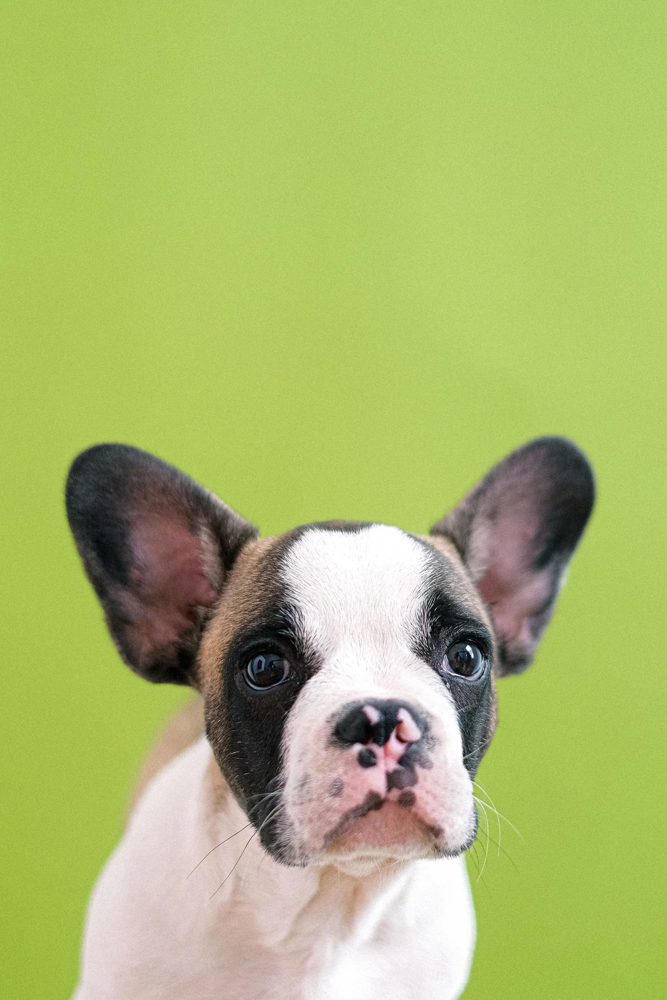
05Capítulo 5 · Materiais e crossmateriais de PDV
Materiais de PDV
Cada material da Ourofino tem um lugar certo na loja e uma hora de sair. Aqui você vê os dois, peça por peça.
5Materiais de PDV
Serafina
Material trabalha junto com o produto
Repara em uma coisa: o material de PDV só ajuda quando o produto está perto dele. Já vi peça bonita no lugar errado virar enfeite. E enfeite não ajuda o tutor a achar nada. Aqui você vê cada material, onde ele vai e quando ele sai.
5Materiais de PDV
o que é
Material de PDV
Tudo o que a marca leva para a loja para o tutor encontrar o produto: wobbler, cartaz, display, adesivo de chão e outras peças. PDV quer dizer ponto de venda. Você também vai ouvir MPDV, que é a mesma coisa.
Exemplo
Um cartaz de WellPET na sala de espera é material de PDV. O wobbler embaixo do WellPET, na farmácia, também.
5Materiais de PDV
Onde cada material fica na loja
Wobbler, régua e stopper ficam na prateleira do produto. A testeira vai no alto da gôndola e o clip strip na lateral de outra categoria. Display de balcão e take one ficam no balcão e na espera. Display de chão e ilha ficam na passagem. Cartaz vai na parede ou na vitrine, e o adesivo, no piso.
Arraste para o lado para ver a planta inteira.
5Materiais de PDV
28%Num teste que rastreou o olhar de 348 compradores, eles levaram cerca de 17 segundos para escolher entre 12 marcas. Mesmo assim, 28% das marcas não receberam nem um olhar.
Fonte: Chandon, Hutchinson, Bradlow e Young, “Does In-Store Marketing Work?”, INSEAD, 2008 (publicado no Journal of Marketing em 2009).
Por que a loja precisa de material
Na frente da prateleira, o tutor decide em poucos segundos. O olho dele passa rápido e pula muita coisa. Produto que ele não vê, ele não compra.
O material de PDV coloca o produto dentro desse olhar rápido. Por isso ele só funciona perto do produto: chama o olho, e o olho encontra a embalagem logo ali.
Lembre-se. O material chama o olho. Quem vende é o produto que está ao lado dele.
5Materiais de PDV
Antes de instalar qualquer peça
1Ache o produtoo material vai perto dele ou aponta o caminho até ele. Sem produto por perto, a peça volta para a caixa.
2Peça licençafale com o responsável da loja antes de colar, pendurar ou montar. A loja é dele, e você é convidado.
3Veja o que a peça vai cobrirpreço, embalagem, aviso da loja, passagem ou extintor. Se cobre alguma coisa, ela muda de lugar.
4Confira a campanhamaterial de campanha que já terminou sai na hora, mesmo que ainda esteja inteiro.
5Olhe o que já existe alise o ponto já tem peças de outras marcas ou peças velhas da Ourofino, não amontoe.
6Fotografe depoisa foto mostra ao supervisor onde a peça ficou e ajuda você a conferir na próxima visita.
5Materiais de PDV
Wobbler
O que é
Uma plaquinha presa numa haste flexível. Ela fica na borda da prateleira e balança quando alguém passa ou o ar mexe.
Para que serve
O canto do olho é muito bom para perceber movimento. O balanço puxa o olhar do tutor para o produto logo acima da peça.
Onde colocar
Na borda da prateleira, embaixo do produto que ele anuncia, na altura dos olhos. Ou na área de um produto que combina, para levar o tutor até a farmácia (capítulo 6).
Onde nunca colocar
Na porta do consultório, na parede, no vidro do caixa ou na prateleira da concorrente.
Como instalar
Prenda no trilho de preço com o adesivo ou o clipe da peça. A etiqueta de preço continua inteira à vista.
Quando tirar
Quando a campanha acabar, quando o produto mudar de prateleira ou quando a peça ficar torta, suja ou desbotada.
5Materiais de PDV
Erro comum
O wobbler na porta do consultório
O que acontece
A pessoa recebeu os wobblers e ninguém explicou onde eles iam. Ela colou na porta do consultório, onde todo mundo olha. O tutor vê a peça, procura o produto por perto e não encontra nada. E a porta é área do veterinário.
Faça assim
O wobbler vai na prateleira onde o produto está, embaixo dele. Se o produto não está naquela prateleira, o wobbler também não vai. Na dúvida, procure primeiro o produto e só depois o lugar da peça.
Lembre-se. O lugar do wobbler é embaixo do produto que ele anuncia.
5Materiais de PDV
Stopper
O que é
Uma placa que sai da prateleira em ângulo reto e fica virada para o corredor, como uma bandeira.
Para que serve
Quem anda pelo corredor olha para a frente e vê as embalagens de lado. O stopper entra no caminho desse olhar.
Onde colocar
Nas gôndolas de autosserviço, como a de higiene do ambiente, na prateleira do produto e na altura dos olhos.
Onde nunca colocar
Em corredor estreito, onde bate no ombro ou no carrinho, em gôndola sem o produto ou colado em outro stopper.
Como instalar
Encaixe no trilho ou no suporte da prateleira. A placa fica reta, firme e sem cobrir nenhum preço.
Quando tirar
Quando a campanha terminar ou quando a placa estiver dobrada, solta ou rasgada.
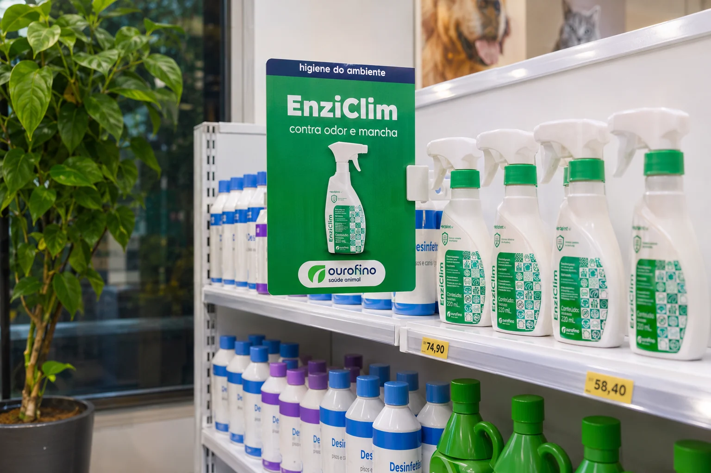
5Materiais de PDV
Testeira
O que é
Uma placa presa no alto da gôndola, acima da última prateleira, que dá para ver do outro lado da loja.
Para que serve
Quem entra procura primeiro a área e só depois o produto. A testeira mostra de longe onde a categoria fica.
Onde colocar
No topo da seção onde está o bloco da Ourofino, centralizada sobre ele, como na gôndola de higiene do ambiente.
Onde nunca colocar
Em cima de outra categoria, tampando luz, câmera ou placa da loja, ou presa sem firmeza.
Como instalar
Use o suporte superior da gôndola e uma escada segura. Confira se dá para ler do começo do corredor.
Quando tirar
Quando a seção mudar de lugar, quando a peça desbotar ou quando a campanha acabar.
5Materiais de PDV
Régua de gôndola
O que é
Uma tira impressa que encaixa na frente da prateleira, no trilho onde ficam as etiquetas de preço.
Para que serve
A faixa de cor marca onde o bloco da Ourofino começa e termina. O olho entende o bloco, e quem repõe sabe onde devolver.
Onde colocar
Na prateleira do bloco da Ourofino, com o mesmo comprimento do bloco.
Onde nunca colocar
Por cima das etiquetas de preço, na prateleira de outra marca ou sobrando para o lado da concorrente.
Como instalar
Meça o bloco antes. Encaixe a régua no trilho e confira se todas as etiquetas continuam à vista.
Quando tirar
Quando rasgar, desbotar ou quando o bloco mudar de prateleira.
5Materiais de PDV
Material de prateleira: certo e errado
Evite
Três wobblers seguidos na mesma prateleira, um tampando o outro
Régua encaixada por cima do preço da loja
Stopper na gôndola onde o produto acabou
Faça
Wobbler embaixo do produto que ele anuncia
Etiqueta de preço inteira à vista, com a peça instalada
Uma peça para cada produto, sem amontoar
Lembre-se. Se a peça cobre o preço, ela está no lugar errado.
5Materiais de PDV
Display de balcão
O que é
Uma estrutura pequena que fica em cima do balcão, com unidades do produto ou com informação sobre ele.
Para que serve
No balcão o tutor fica parado, esperando atendimento ou pagando. É o momento em que ele tem tempo de ler.
Onde colocar
Num canto livre do balcão da farmácia ou do caixa, com a frente virada para o tutor.
Onde nunca colocar
Em cima da maquininha de cartão, no espaço onde o tutor apoia as compras ou na frente do atendente.
Como instalar
Peça licença, monte, abasteça e deixe o preço visível. Produto que a loja guarda atrás do balcão só entra se ela autorizar.
Quando tirar
Quando ficar vazio e a loja não tiver estoque para repor, ou quando a campanha acabar.
5Materiais de PDV
Take one
O que é
Um suporte com folhetos para o tutor levar. O nome vem do inglês e quer dizer “pegue um”.
Para que serve
Alguns cuidados pedem uma explicação que não cabe na prateleira. Em casa, o tutor lê com calma e mostra para a família.
Onde colocar
No balcão, na sala de espera da clínica ou na espera do banho e tosa, onde o tutor fica parado.
Onde nunca colocar
No chão, em lugar molhado, dentro do consultório sem o veterinário pedir ou com folheto de campanha vencida.
Como instalar
Monte com a frente virada para o tutor e encha com o folheto oficial e atual. Reabasteça a cada visita.
Quando tirar
Quando o folheto ficar desatualizado ou quando o suporte ficar vazio e não houver reposição.
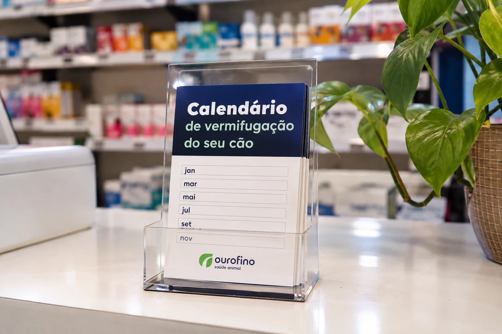
5Materiais de PDV
Display de chão
O que é
Uma estrutura de pé, apoiada no chão, com várias unidades do produto. Ela cria um ponto extra, um segundo lugar de venda.
Para que serve
Coloca o produto no caminho de quem não foi até a categoria, como o tutor que entrou só pela ração.
Onde colocar
Numa área de passagem, perto da categoria ou do caixa, no lugar que a loja autorizar.
Onde nunca colocar
Na frente de extintor, de saída de emergência ou da porta do consultório, ou fechando um corredor.
Como instalar
Base firme, produtos pesados embaixo e preço visível. Abasteça só com o estoque que sobrar depois de encher a gôndola.
Quando tirar
Quando ficar vazio, quebrar ou a campanha terminar. Display vazio passa a impressão de loja abandonada.
5Materiais de PDV
Ilha
O que é
Um conjunto de produtos no meio da loja, com acesso por todos os lados. Costuma ser montada com cubos, caixas impressas que se empilham.
Para que serve
O volume de produto aparece de longe e convida o tutor a dar a volta. Funciona bem em campanha e em lançamento.
Onde colocar
Numa área de muita passagem, com espaço livre em volta, juntando produtos que se usam juntos, como Herbalvet T.A. e EnziClim.
Onde nunca colocar
Com cubo de produto que não está na ilha, misturando produtos sem relação de uso ou fechando a passagem.
Como instalar
Base larga, pilha estável, produto de verdade em todos os lados e preço visível. O tutor precisa pegar sem derrubar nada.
Quando tirar
Quando a campanha acabar ou o produto acabar. Ilha com buraco vira depósito de caixa.
Lembre-se. Cubo de produto que não está na ilha é o erro do carnaval, que você vê no capítulo 6.
5Materiais de PDV
Clip strip
O que é
Uma tira com ganchos onde ficam pendurados produtos pequenos e leves, em sachê ou em cartela.
Para que serve
Leva um produto pequeno para outra área da loja, perto de uma categoria que combina, sem tirar nada do lugar.
Onde colocar
Na lateral de uma gôndola de categoria relacionada, na altura das mãos.
Onde nunca colocar
Com produto pesado, com produto que a loja guarda atrás do balcão ou tampando outro produto.
Como instalar
Pendure no gancho ou no trilho da prateleira, abastecido de cima a baixo e com preço.
Quando tirar
Quando ficar vazio e não houver reposição. Tira com dois sachês pendurados parece sobra.
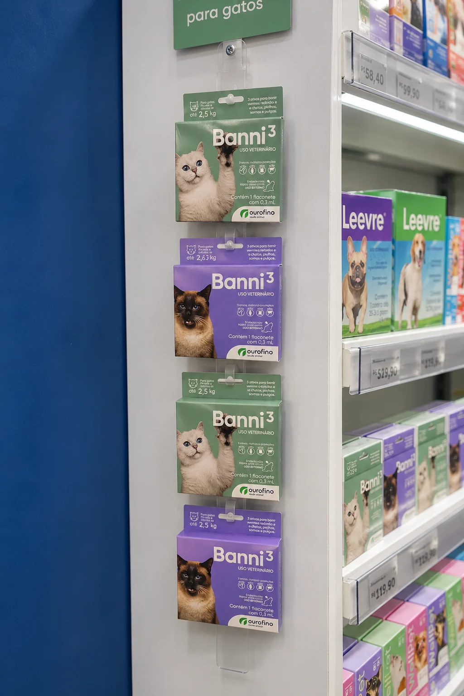
5Materiais de PDV
Cartaz
O que é
Uma peça impressa grande para parede, vitrine ou área de espera. Leva a mensagem de uma campanha ou de um cuidado.
Para que serve
Passa uma mensagem que não cabe na prateleira. É lido de longe, ou com calma por quem está esperando.
Onde colocar
Na vitrine, na parede da sala de espera ou perto da categoria, na altura dos olhos.
Onde nunca colocar
Em cima de aviso da loja, alvará ou tabela de preço, na saída de emergência ou em parede úmida.
Como instalar
Pergunte onde pode fixar. Use fita que não descasca a pintura e deixe a peça reta.
Quando tirar
Quando a campanha terminar ou quando o cartaz desbotar ou começar a rasgar.
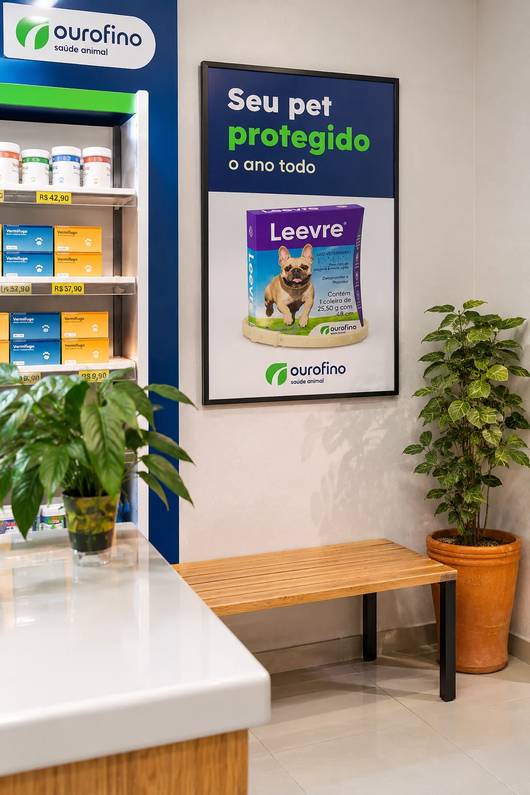
5Materiais de PDV
Adesivo de chão
O que é
Um adesivo colado no piso, feito para aguentar gente pisando em cima.
Para que serve
Mostra o caminho até um produto que o tutor não vê da porta, como o antipulga que fica na farmácia.
Onde colocar
Num corredor de passagem, perto da entrada ou em frente à categoria, com a seta apontando para o produto.
Onde nunca colocar
No banho e tosa, no piso da clínica, em rampa, em degrau ou em piso molhado.
Como instalar
Limpe e seque o piso. Cole do centro para as bordas, sem deixar bolha nem ponta solta.
Quando tirar
Quando começar a descolar, sujar ou gastar. Ponta solta faz alguém tropeçar.
5Materiais de PDV
Material demais também atrapalha
Quando a parede tem dez cartazes, o olho do tutor para de ler. Cada peça disputa atenção com a vizinha, e ele não guarda nenhuma.
Material velho passa outra mensagem: ninguém cuida daquele espaço. O lojista percebe, e o tutor também.
Por isso a visita também é hora de tirar. Peça de campanha encerrada, rasgada ou sem produto perto sai na hora. Você leva embora ou descarta onde a loja indicar.
Na prática
Antes de pôr uma peça nova, conte as que já estão ali. Material de outra marca você não mexe. Se ele atrapalha, comente com o responsável da loja.
5Materiais de PDV
Teste rápido
Você recebeu um wobbler de Top Dog. A loja guarda o Top Dog na farmácia, atrás do balcão. Onde ele vai?
O wobbler fica embaixo do produto que ele anuncia. Longe do produto, ele chama a atenção para algo que o tutor não vai encontrar.
5Materiais de PDV
Teste rápido
A loja autorizou um display de chão, mas o único espaço livre fica na frente do extintor. O que você faz?
Material nunca bloqueia extintor, saída ou corredor. Peça outro lugar e, se não houver, avise o seu supervisor.
5Materiais de PDV
Para levar
O material fica perto do produto ou aponta o caminho até ele.
Peça licença antes de colar, pendurar ou montar qualquer peça.
Nenhuma peça cobre preço, produto, aviso da loja ou passagem.
O display de chão recebe só o estoque que sobra da gôndola.
Campanha acabou ou peça estragou: tire na mesma visita.
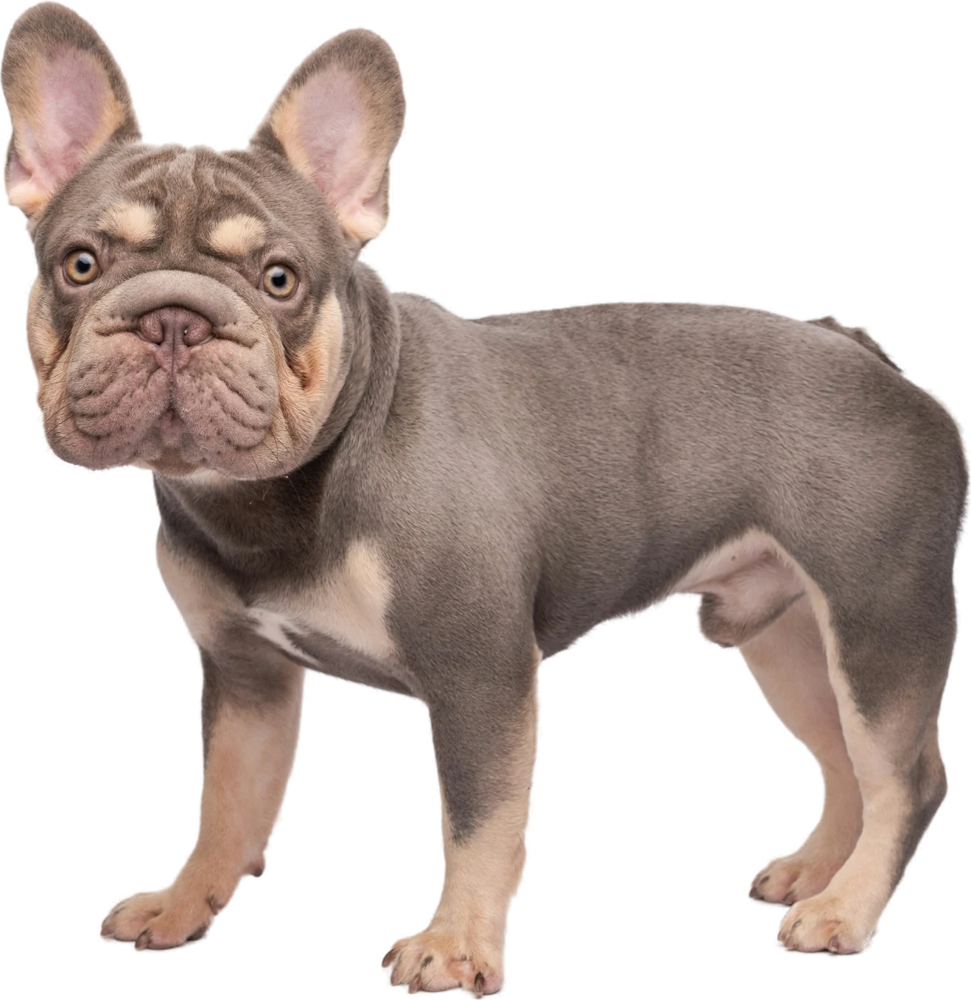
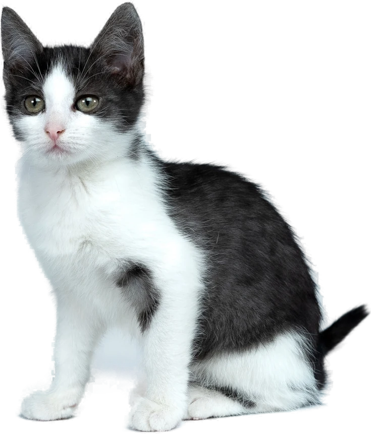
06Capítulo 6 · Materiais e crosscross merchandising e cross selling
Cross merchandising e cross selling
Cross quer dizer cruzar. Às vezes você leva um material para outra área da loja, às vezes junta dois produtos que combinam. Saber qual dos dois usar evita confusão na loja.
6Cross merchandising e cross selling
Serafina
A palavra que eu mais ouvia e menos entendia
No meu começo, todo mundo falava em cross e ninguém explicava. Eu achava que era juntar qualquer coisa com qualquer coisa. Depois aprendi que existem dois tipos. E que todo cross bom começa olhando o que o tutor está fazendo.
6Cross merchandising e cross selling
Cross quer dizer cruzar
A palavra vem do inglês e quer dizer cruzar. No trade, você cruza uma área da loja com outra, ou um produto com outro.
Quando quem muda de lugar é o material, o nome é cross merchandising. O produto fica onde sempre esteve, e a peça vai lembrar o tutor em outra área.
Quando você junta dois produtos que se completam no uso, o nome é cross selling, ou venda cruzada.
Na prática
Para saber qual dos dois você está fazendo, veja o que mudou de lugar: o material ou o produto.
6Cross merchandising e cross selling
o que é
Cross merchandising
Levar o material de um produto para outra área da loja, onde o tutor pode lembrar que precisa dele. O produto continua no ponto natural, o lugar fixo dele na loja. A peça faz a ponte até lá.
Exemplo
Wobbler de WellPET na gôndola de ração de cão. O WellPET continua no balcão da farmácia, e quem compra ração vê o lembrete no corredor.
Lembre-se. O produto fica no lugar dele. Quem viaja é o material.
6Cross merchandising e cross selling
o que é
Cross selling
Juntar dois produtos que se completam no uso, para o tutor levar os dois. Eles ficam lado a lado na prateleira, ou o balconista oferece um junto com o outro. Também se chama venda cruzada.
Exemplo
EnziClim e Herbalvet T.A. lado a lado na higiene do ambiente. Um age contra odor e mancha de urina, o outro desinfeta o piso.
6Cross merchandising e cross selling
Como saber qual é qual
Cross merchandising
Cross selling
O que você mexe
o material, que vai até outra área
o produto, que fica perto do outro
Onde o produto fica
no ponto natural, sem sair de lá
ao lado do produto que combina
Quem lembra o tutor
a peça de PDV
a prateleira ou o balconista
Exemplo
wobbler de WellPET na ração de cão
EnziClim ao lado do Herbalvet T.A.
6Cross merchandising e cross selling
R$ 40,8 bilhõesNo Brasil, em 2024, a ração somou R$ 40,8 bilhões dos R$ 75,4 bilhões do setor pet. Os produtos veterinários somaram R$ 7,8 bilhões.
Fonte: Abinpet e Instituto Pet Brasil, balanço do mercado pet de 2024, divulgado em abril de 2025.
Por que o material vai até a ração
A ração acaba toda semana ou todo mês, e o tutor volta à loja para repor. Na farmácia ele vai quando já tem um problema, como a pulga que apareceu.
O material de WellPET que fica só na farmácia fala com quem já foi até lá. Na área da ração, ele encontra o tutor que ainda nem pensou em pulga.
Lembre-se. O material vai aonde o tutor já passa. O produto fica onde a loja guarda.
6Cross merchandising e cross selling
Como achar o cross sozinho
1Pare na área e observeveja o que as pessoas pegam, olham e perguntam ali: ração, coleira, shampoo, areia de gato.
2Pergunte o que o tutor está fazendo alirepondo a ração do cão, escolhendo uma guia para passear, trazendo o gato para o banho.
3Pergunte do que mais ele vai precisar por causa dissoquem vai passear com o cão precisa dele protegido contra pulga e carrapato.
4Confira a espécieárea de cão recebe material de produto para cão. Área de gato, de produto para gato.
5Teste a frase“Quem está aqui comprando isso também precisa daquilo.” Se a frase não fecha, o cross não serve.
6Escolha o tipoproduto que fica atrás do balcão pede material. Produto que pode ficar ao lado vira cross selling.
6Cross merchandising e cross selling
As perguntas na área de coleiras
Na área de coleiras e guias, o tutor que escolhe uma guia nova vai sair para passear com o cão. Na rua, na praça e na grama, o cão encontra pulga, carrapato e outros cães.
O WellPET entra aqui. Ele fica no balcão da farmácia, então quem vai até a área de coleiras é o material: um wobbler ou um cartaz que lembre a proteção.
O tutor lê, vai até o balcão e pede. O produto não saiu do lugar, e o lembrete apareceu na hora certa.
Na prática
Ao lado das guias, o cartaz de WellPET lembra a proteção de até 45 dias contra pulga e carrapato.
6Cross merchandising e cross selling
O mapa dos cruzamentos
Na planta do petshop, as setas mostram de onde o material sai e até onde ele leva o tutor. Cada seta começa numa área que o tutor já visita, como ração ou coleiras. E termina no ponto natural do produto, quase sempre a farmácia.
Arraste para o lado para ver a planta inteira.
Cross merchandisingo material fica na área e leva o tutor até a farmácia
Cross sellingprodutos que combinam, oferecidos juntos
1Ração de cão material de WellPET e de Plenipil (para pele sensível)
2Coleiras e guias material de WellPET
3Ração de gato material de Banni 3
4Top Dog + Herbalvet T.A. vermífugo para o cão e desinfetante para o ambiente onde ele vive
5EnziClim + Herbalvet T.A. os dois cuidam do ambiente, lado a lado na gôndola
6Cross merchandising e cross selling
Cross merchandising com os heróis
Material de
Vai para a área de
O que o tutor está fazendo ali
Por que combina
WellPET, comprimido contra pulga e carrapato para cão
ração de cão
repondo a comida do cão
tem um cão em casa que precisa de proteção
WellPET
coleiras, guias e acessórios
se preparando para passear
o passeio leva o cão para a rua, a grama e outros cães
Plenipil, suplemento de pele e pelo para cão
ração para pele sensível
cuidando da pele do cão pela comida
quem já cuida da pele pode se interessar pelo suplemento
Banni 3, spot on para gato
ração de gato
repondo a comida do gato
tem um gato em casa que precisa de proteção
6Cross merchandising e cross selling
9%Em supermercados dos EUA, salgadinho e refrigerante frente a frente no corredor tiveram vendas semanais mais de 9% maiores. Separados por um corredor, venderam quase 1,5% menos.
Fonte: Bezawada, Balachander, Kannan e Shankar, “Cross-Category Effects of Aisle and Display Placements”, Journal of Marketing, 2009.
Por que produto perto de produto vende mais
O tutor lembra do segundo produto quando ele aparece ao lado do primeiro. Se precisa andar até outra área para achar, muitas vezes esquece ou desiste.
Por isso o cross selling funciona melhor com os dois produtos na mesma prateleira. Se a loja guarda um deles em outra área, quem lembra é o balconista ou uma peça apontando o caminho.
Lembre-se. Junte só o que o tutor usa junto. O resto confunde.
6Cross merchandising e cross selling
Onde o cross selling acontece
Na mesma prateleira
Quando os dois produtos ficam na mesma área, como EnziClim e Herbalvet T.A. na higiene do ambiente, coloque um ao lado do outro.
Com uma peça apontando
Com os dois em áreas diferentes, um material perto de um produto lembra o outro e diz onde ele fica.
Na conversa do balconista
Quando o tutor já está no balcão, o balconista oferece o produto que completa a compra, com uma frase simples.
6Cross merchandising e cross selling
Top Dog e Herbalvet T.A. no balcão
tutor
“Vim buscar um vermífugo pro meu cão.”
balconista
“Tem o Top Dog, que é palatável. Tem sabor que os cães adoram.”
balconista
“Pra completar, tem o Herbalvet T.A. Ele desinfeta o chão e o canil onde o cão fica.”
tutor
“E onde ele fica?”
balconista
“Na higiene do ambiente, logo ali. Eu pego pra você.”
6Cross merchandising e cross selling
Erro comum
Antipulga de cão na ração de gato
O que acontece
O material de WellPET vai para a área de ração de gato porque ali tinha espaço livre. O WellPET é para cão. O tutor de gato não se interessa, e alguém pode achar que o produto serve para gato.
Faça assim
Antes de colocar a peça, leia na embalagem para qual espécie é o produto. Material de cão vai para área de cão. Na ração de gato, o material certo é o do Banni 3.
Lembre-se. Primeiro a espécie, depois o espaço livre.
6Cross merchandising e cross selling
O erro do carnaval
Repare na ilha: o cubo de WellPET está ao lado dos frascos de Herbalvet T.A. Só que não tem WellPET ali, porque ele fica atrás do balcão. O tutor vê a embalagem gigante, procura o produto e não acha. E os dois produtos não têm relação de uso.
6Cross merchandising e cross selling
Erro comum
Como o carnaval acontece
O que acontece
A loja recebe material de vários produtos fortes. Alguém junta tudo numa ilha para ela ficar cheia. Cada peça puxa o olho para um lado e nenhuma leva a um produto. O tutor não entende o que a ilha vende.
Faça assim
Monte a ilha só com produtos que se usam juntos e que estão ali, como Herbalvet T.A. e EnziClim. O material dos outros produtos vai para perto deles ou para um cross que faça sentido.
6Cross merchandising e cross selling
Cross bem feito e cross de carnaval
Evite
Cubo de um produto que não está na ilha
Material na área que tinha espaço livre, sem ligação com o produto
Tirar o produto do balcão para encher uma ilha
Peça de cross esquecida depois que a campanha acabou
Faça
Material de cão na área de cão, material de gato na área de gato
A peça lembra o produto e mostra onde ele está
Produtos juntos só quando o tutor usa os dois
Cross desfeito quando o produto acaba ou a campanha termina
6Cross merchandising e cross selling
Serafina
O teste da frase
Antes de montar qualquer cross, eu falo baixinho: quem está aqui comprando isso também precisa daquilo. Se eu travo no meio da frase, o cross não está bom. Faço isso até hoje, e não precisa de lista decorada.
6Cross merchandising e cross selling
Teste rápido
Você tem um wobbler de Banni 3. Fora da farmácia, em que área ele faz mais sentido?
O Banni 3 é para gato. Quem está repondo a ração do gato tem um gato em casa, e ali o lembrete da proteção faz sentido.
6Cross merchandising e cross selling
Teste rápido
A loja tem uma prateleira de ração para cães de pele sensível. Que material faz sentido ali?
Quem escolhe ração para pele sensível já cuida da pele do cão. O material de Plenipil lembra o suplemento e mostra onde ele fica.
6Cross merchandising e cross selling
Teste rápido
Herbalvet T.A. e EnziClim estão lado a lado na gôndola de higiene do ambiente. Isso é:
São dois produtos que cuidam do ambiente e ficam juntos para o tutor levar os dois. Nenhum material mudou de área.
6Cross merchandising e cross selling
Para levar
Cross merchandising leva o material; o produto fica no ponto natural.
Cross selling junta produtos que o tutor usa juntos.
Pergunte o que o tutor faz ali e do que mais vai precisar.
Material de cão na área de cão, de gato na área de gato.
Cubo sem produto e mistura sem relação viram carnaval.
07Capítulo 7 · Fundamentosponto natural e ponto extra
Ponto natural e ponto extra
O ponto extra ajuda a vender para quem não veio buscar o produto. Ele só funciona quando o ponto natural continua cheio. Tirar produto da gôndola para encher um display é um dos erros mais comuns na loja.
7Ponto natural e ponto extra
Serafina
O erro que eu mais vejo
Já vi muito display de chão lindo e cheio do lado de uma gôndola com buraco. O promotor tirou o produto da prateleira pra encher o display. O display ficou bonito. O tutor que foi direto na categoria não achou o produto.
7Ponto natural e ponto extra
o que é
Ponto extra
É um segundo lugar onde o mesmo produto aparece, fora do ponto natural. Pode ser um display de chão, uma ilha, um display de balcão ou um clip strip. Ele coloca o produto no caminho de quem não estava procurando por ele.
Exemplo
O Herbalvet T.A. fica na gôndola de higiene do ambiente, que é o ponto natural. Um display de chão com Herbalvet T.A. perto do banho e tosa é ponto extra.
7Ponto natural e ponto extra
Ponto natural e ponto extra, lado a lado
Ponto natural
Ponto extra
O que é
O endereço fixo do produto, junto da categoria
Um segundo lugar, fora da categoria
Quem atende
O tutor que veio buscar o produto
O tutor que passou e lembrou que precisava
Quanto tempo fica
O ano todo
Uma campanha ou uma época do ano
Prioridade
Abastecido primeiro, sempre cheio
Recebe o que sobrar
Lembre-se. O ponto natural atende quem veio buscar. O ponto extra lembra quem estava passando.
7Ponto natural e ponto extra
Antes do ponto extra, ache o ponto natural
1Identifique a categoriaAntipulga e vermífugo ficam com os medicamentos, na farmácia. Desinfetante fica com a higiene do ambiente.
2Procure os vizinhosO produto fica junto dos concorrentes que resolvem o mesmo problema para a mesma espécie.
3Confirme com o balconistaCada loja tem o seu jeito. Pergunte onde a equipe guarda o produto e onde o tutor costuma pedir.
4Confira se está cheioSó depois de ver o ponto natural completo, com preço e validade em ordem, pense no ponto extra.
7Ponto natural e ponto extra
73,5%Num supermercado do Reino Unido, o café ganhou display no fim do corredor e vendeu 73,5% mais. O refrigerante, 51,7% mais.
Fonte: Nakamura e outros, Social Science & Medicine, 2014, com as vendas semanais de 2010 e 2011.
Por que o ponto extra vende
Na gôndola, o produto espera o tutor que veio buscar. O ponto extra vai até quem estava pensando em outra coisa. É o tutor que entrou para comprar ração e passa por um display de desinfetante perto do caixa.
Ali ele lembra que o desinfetante do canil está acabando. Essa venda a gôndola sozinha não faria.
O estudo abaixo é de supermercado, com bebidas. Na loja pet, o raciocínio é o mesmo: o produto aparece no caminho e lembra o tutor de uma necessidade.
7Ponto natural e ponto extra
Formatos de ponto extra na loja pet
Display de chão
Estrutura de papelão ou metal com o produto, montada no corredor ou perto do caixa.
Ilha
Módulo no meio da área de circulação, com acesso por todos os lados. Comporta mais produto e mais material.
Display de balcão
Pequeno, fica em cima do balcão ou do caixa. Serve para produto pequeno, que o tutor pega na hora de pagar.
Clip strip
Fita pendurada na prateleira de outra categoria, com o produto preso nela. Leva o produto para perto de quem compra outra coisa.
Lembre-se. Cada formato tem o seu lugar certo. O capítulo 5 mostra onde vai cada material.
7Ponto natural e ponto extra
O ponto extra que esvazia a gôndola
O display de chão está cheio, mas a gôndola ficou com o buraco de onde as caixas saíram. Para o tutor que vai direto à categoria, o produto acabou.
Ele leva o que estiver no lugar. O display vende para quem passa, e a loja perde quem veio buscar.
Buraco na gôndolao produto saiu do ponto naturalDisplay cheio
7Ponto natural e ponto extra
Por que esse buraco passa despercebido
Quando o produto vai todo para o display, o sistema da loja continua mostrando estoque. Para quem faz o pedido, está tudo certo, e a loja não compra de novo.
A gôndola fica com o buraco por dias. O tutor que procura na categoria não acha e leva outra marca, mesmo com o produto a poucos metros dali.
Você viu no capítulo 2 que a maior parte das rupturas começa dentro da própria loja. Esta é uma delas, e você consegue evitar na visita.
Na prática
Depois de montar qualquer ponto extra, volte à gôndola e confira se nenhuma frente ficou vazia.
7Ponto natural e ponto extra
A regra: gôndola cheia primeiro
A gôndola continua cheia, com preço e validade em ordem. O display de chão recebeu só o estoque que sobrou depois de completar a gôndola.
Assim os dois pontos vendem ao mesmo tempo: a gôndola atende quem veio buscar, o display atende quem passou.
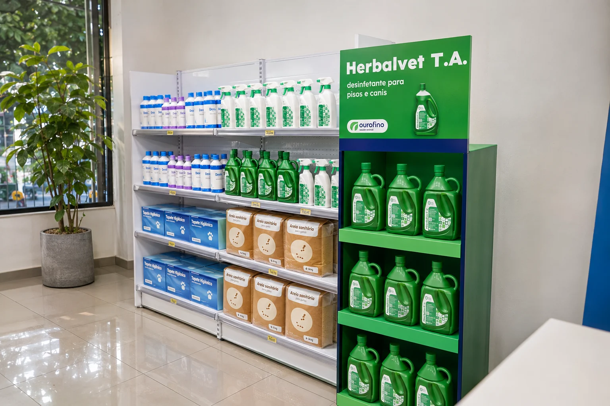
Gôndola cheiao ponto natural continua abastecidoEstoque extra no display
Lembre-se. O ponto natural fica cheio, sempre. O ponto extra recebe o que sobrar.
7Ponto natural e ponto extra
Erro comum
Tirar da gôndola para encher o display
O que acontece
Chega um display novo e o promotor quer deixá-lo cheio na foto. Pega as caixas da gôndola, monta o display e vai embora. A gôndola fica com buraco e ninguém repõe.
Faça assim
Complete a gôndola primeiro e use no display só o estoque que sobrar. Se não der para os dois, mantenha o ponto natural cheio. Avise o balconista e o supervisor que o display espera estoque.
7Ponto natural e ponto extra
Como abastecer sem esvaziar a gôndola
1Complete a gôndolaTodas as frentes cheias, com preço e com a validade mais curta na frente.
2Veja o que sobrouConfira no depósito ou pergunte ao balconista quanto estoque a mais a loja tem.
3Monte com a sobraO ponto extra recebe só esse estoque, com o preço à vista.
4Fotografe os doisGôndola cheia e ponto extra na mesma visita. A foto mostra que um não esvaziou o outro.
5Combine a reposiçãoAvise o balconista que o ponto extra também precisa ser reposto até a próxima visita.
7Ponto natural e ponto extra
Quando vale montar um ponto extra
Evite
Faltar produto na gôndola para encher o ponto extra
Montar sem pedir para a loja
Colocar num canto onde ninguém passa
Usar material de uma campanha que já acabou
Faça
A loja autorizou e mostrou o lugar
Tem estoque para encher a gôndola e o ponto extra
Existe um motivo: campanha, lançamento ou época do ano
O lugar tem passagem de tutor e combina com o produto
Lembre-se. Ponto extra só com o ok da loja e no lugar que ela indicar.
7Ponto natural e ponto extra
O ponto extra precisa de um motivo
Um ponto extra funciona melhor quando conversa com algo que o tutor está vivendo. Sem motivo, ele ocupa espaço na loja e o tutor passa sem notar.
O motivo pode ser uma campanha da Ourofino, um lançamento ou uma época em que a necessidade cresce. No calor, por exemplo, aparecem mais pulgas e carrapatos, e o tutor fica mais atento à proteção do pet.
O motivo também define quanto tempo o ponto extra fica. Quando a campanha acaba, o material sai e o ponto é desmontado ou trocado.
Na prática
Antes de montar, pergunte a si mesmo por que aquele produto está ali agora. Se a resposta for só porque sobrou material, espere um motivo.
7Ponto natural e ponto extra
Onde o ponto extra funciona
Monte o ponto extra no caminho que o tutor já faz: entrada, corredor da ração, fila do caixa. Evite cantos sem passagem, a porta do consultório e lugares que atrapalham a circulação ou o trabalho da equipe.
O capítulo 10 mostra como ler o fluxo de cada loja.
Arraste para o lado para ver a planta inteira.
7Ponto natural e ponto extra
Produtos que ficam atrás do balcão
Alguns produtos ficam fora do alcance do tutor, atrás do balcão ou numa área controlada da farmácia. São medicamentos e antiparasitários que pedem a orientação do balconista na hora da compra. O WellPET é um deles.
Para esses produtos, o ponto extra usa só material: wobbler, cartaz ou adesivo de chão. O material mostra ao tutor que o produto está no balcão, e o produto continua no lugar dele.
Funciona como uma placa: o tutor vê, lembra da necessidade e pede no balcão.
Lembre-se. Produto de balcão continua no balcão. No ponto extra, entra só o material.
7Ponto natural e ponto extra
Serafina
Material longe do produto confunde
Já vi ilha montada com material de um produto que estava atrás do balcão. O tutor olhava, procurava o produto na ilha e não achava. Quando o produto fica no balcão, o material aponta pra lá. No capítulo 6 tem a foto desse erro, o tal do carnaval.
7Ponto natural e ponto extra
Erro comum
Montar o ponto extra e esquecer dele
O que acontece
O display é montado no começo do mês e ninguém volta nele. Três semanas depois está meio vazio, com material de uma campanha que já acabou. Ponto extra vazio passa a imagem de produto esquecido.
Faça assim
Na visita seguinte, confira os dois pontos: gôndola primeiro, ponto extra depois. Reabasteça com a sobra, tire o material vencido e desmonte quando a campanha terminar.
7Ponto natural e ponto extra
Teste rápido
Você vai montar um display de chão de Herbalvet T.A. A loja só tem 6 frascos, e a gôndola de higiene do ambiente comporta 6 frentes. O que você faz?
A gôndola cheia vem primeiro. O display recebe só o que sobrar. Sem sobra, avise o balconista e o supervisor e monte o display quando chegar estoque.
7Ponto natural e ponto extra
Teste rápido
A loja quer um ponto extra de WellPET perto da ração de cão, mas o produto fica atrás do balcão. O que você faz?
Produto que fica atrás do balcão continua lá. O ponto extra usa só material, que leva o tutor até o balcão para pedir.
7Ponto natural e ponto extra
O que levar deste capítulo
Ponto natural é o endereço fixo; ponto extra é um segundo lugar
O ponto natural fica cheio; o ponto extra recebe o que sobrar
Ponto extra precisa de motivo, estoque e passagem de tutor
Produto de balcão ganha só material que aponta para o balcão
Na volta, confira os dois pontos: gôndola primeiro
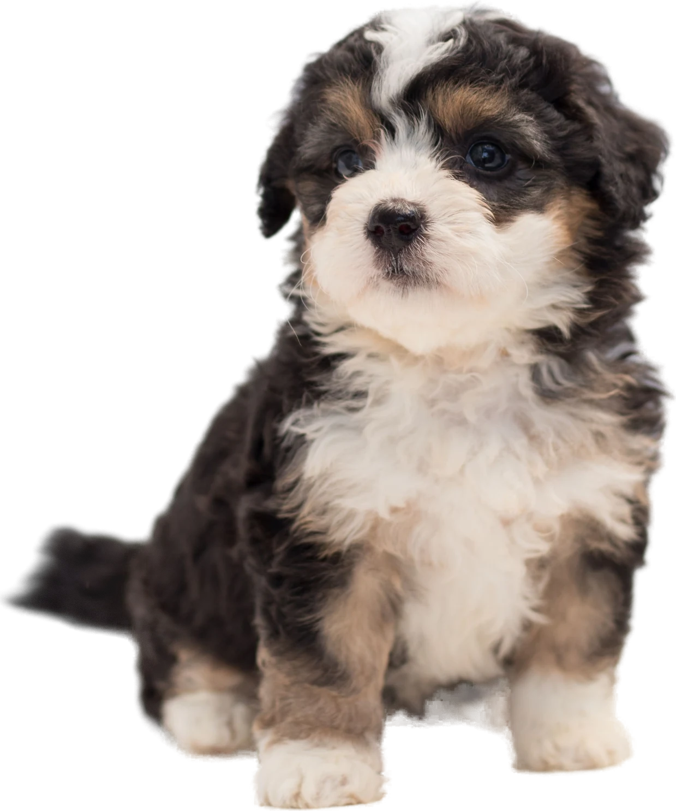
08Capítulo 8 · Pessoas e lojavocê é convidado
Relacionamento em loja
A loja recebe você porque permite. O jeito de chegar, trabalhar e sair decide se a porta continua aberta na próxima visita.
8Relacionamento em loja
Serafina
A menina que não sabia o que veio fazer
Já vi lojista ligar pra Ourofino reclamando: “tem uma menina aqui que não sabe o que veio fazer”. Ela sabia, só não contou pra loja. Desde então eu trato cada loja como a casa de alguém que me convidou. Vou te mostrar como eu chego, trabalho e saio.
8Relacionamento em loja
Você é convidado na loja
A loja tem dono, equipe, clientes e regras próprias. Ela não tem obrigação de receber você. Você entra porque a loja permite, e todo o seu trabalho depende dessa permissão.
Pense na casa de alguém que convidou você para almoçar. Lá, você cumprimenta, pede licença antes de abrir um armário e deixa tudo em ordem ao sair. Na loja vale o mesmo. A gôndola, o estoque e o balcão são da casa.
Na prática
Antes de tocar em qualquer produto, procure quem está no balcão e se apresente. Vale também para a loja que você visita toda semana.
Lembre-se. Você trabalha na loja com permissão. Cuide dessa permissão em toda visita.
8Relacionamento em loja
A chegada em seis passos
1Espere o atendimento acabarSe o balconista está com um tutor, fique a dois passos, visível, e aguarde. O cliente da loja vem antes.
2Diga quem você éSeu nome e a empresa, com o crachá à vista. A pessoa precisa saber quem vai mexer na loja dela.
3Diga o que veio fazerUma tarefa concreta, como “organizar os vermífugos e conferir preço”. Frase vaga deixa a equipe desconfiada.
4Diga quanto tempo levaSabendo o tempo, a equipe se organiza e sabe quando você termina.
5Pergunte com quem falarQuem autoriza mexer na gôndola? Pode começar agora ou é melhor outro horário?
6Combine o básicoOnde deixar bolsa e caixas, se pode usar o banheiro e pegar água, onde você não atrapalha.
8Relacionamento em loja
0,1Num estudo da Universidade de Princeton, as pessoas viram fotos de rostos por 0,1 segundo e disseram se pareciam confiáveis. O julgamento ficou muito parecido com o feito sem limite de tempo.
Fonte: Willis e Todorov, “First impressions: making up your mind after a 100-ms exposure to a face”, Psychological Science, 2006.
A primeira impressão chega antes da primeira frase
Quem está no balcão decide em segundos se confia em você. Imagine que você entra calado e vai direto para a prateleira. A primeira leitura é de um estranho mexendo no que não é dele.
Daí em diante, a equipe fica de olho em você em vez de ajudar. Chegar devagar e se apresentar olhando nos olhos faz essa leitura começar do lado certo.
8Relacionamento em loja
A fala de chegada, palavra por palavra
você
“Bom dia! Eu sou a [seu nome], promotora da Ourofino Pet.”
você
“Hoje vim organizar a prateleira de antipulgas e vermífugos da Ourofino e conferir os preços. Levo uns 40 minutos.”
você
“Com quem eu falo antes de começar? Posso trabalhar agora ou você prefere outro horário?”
balconista
“Pode começar. A gerente está lá nos fundos.”
você
“Obrigada. Onde eu deixo a bolsa e as caixas? E, se eu precisar, posso usar o banheiro e encher minha garrafa de água?”
balconista
“Pode sim, é ali no corredor do fundo.”
Lembre-se. Vendedor do distribuidor usa a mesma fala. Troque a tarefa pelo pedido e pela conferência da prateleira.
8Relacionamento em loja
Onde ficar enquanto trabalha
Corredor livre
Trabalhe de lado para a gôndola, com as caixas encostadas. Chegou cliente, abra espaço na hora.
Fora do caminho do tutor
Não fique entre o tutor e o balcão, nem na frente do caixa ou da porta.
Balcão é da loja
Não apoie caixa nem papel no balcão de atendimento. É ali que a loja vende.
Banheiro e água
Pergunte na chegada, antes de precisar. Banheiro da equipe é área da casa: só com licença.
Sujou, limpou
Recolha plástico, fita e caixa vazia. Deixe a área mais arrumada do que encontrou.
Outra marca no lugar dela
Não tire, não esconda e não mude de lugar produto de outra marca.
8Relacionamento em loja
Como falar sem atrapalhar o atendimento
O balconista atende um tutor de cada vez, e cada atendimento é uma venda da loja. Quando você interrompe, ele precisa escolher entre você e o cliente. Ele perde o fio da explicação, e o tutor se sente deixado de lado. A venda pode ir embora.
A conta volta para você: a equipe passa a ver a sua visita como incômodo. Espere a pausa entre um atendimento e outro. Fale baixo, com uma pergunta curta e objetiva.
Na prática
Sábado de manhã, com fila no banho e tosa, junte as dúvidas no bloco. Pergunte tudo de uma vez, num minuto livre, ou resolva com o gerente.
8Relacionamento em loja
Interromper e esperar a pausa
Evite
Chamar o balconista enquanto ele explica algo para o tutor
Comentar produto com o balconista na frente do cliente
Voltar ao balcão com uma pergunta nova a cada cinco minutos
Falar alto do outro lado do corredor
Faça
Esperar o fim do atendimento a dois passos, sem entrar na conversa
Na pausa: “Quando puder, me diz onde deixo as caixas?”
Juntar as dúvidas e perguntar tudo de uma vez
Falar baixo, no canto do balcão, longe do tutor
Lembre-se. O tutor no balcão é a venda da loja. A sua pergunta espera.
8Relacionamento em loja
Confiança: “o que você combina, acontece”
Confiança é a loja saber que pode contar com o que você diz. Ela nasce de promessas pequenas cumpridas: voltar no dia marcado, trazer o material combinado, avisar antes quando algo muda.
A loja deixa você mexer na prateleira dela. Uma promessa quebrada faz o gerente pensar duas vezes antes de deixar de novo. Por isso, prometa só o que depende de você. Entrega e reposição dependem de outras pessoas. Leve ao supervisor e diga à loja quando volta com a resposta.
Na prática
O material não chegou a tempo? Avise antes da visita, não na hora. Assim a loja vê que você acompanha o que prometeu.
8Relacionamento em loja
Confiança na prática
você
“Bom dia! O display do Top Dog que eu fiquei de trazer não chegou a tempo.”
você
“Já avisei o meu supervisor. Trago na visita do dia 12.”
gerente
“Tudo bem, obrigado por avisar antes.”
você
“Hoje eu sigo com a prateleira de vermífugos, como a gente combinou.”
8Relacionamento em loja
Rapidez de resposta: “quando eu pergunto, você volta”
Rapidez de resposta é devolver a resposta no prazo que você deu. O balconista pergunta porque um tutor perguntou para ele primeiro. Se a resposta leva três semanas, o tutor já comprou outra coisa e a dúvida perdeu o sentido.
Quando você não sabe, diga que não sabe e marque o dia em que volta. Responder no prazo mostra à loja que a pergunta dela tem dono. Mesmo sem a resposta completa, dê notícia no dia combinado.
Na prática
Pergunta técnica de uso, idade ou quantidade você não responde de cabeça. Anote, leve ao supervisor e volte com o material oficial.
8Relacionamento em loja
Rapidez de resposta na prática
balconista
“O Banni 3 pode usar em gato filhote?”
você
“Essa resposta tem que vir do material oficial ou do veterinário. Não quero te passar nada errado.”
você
“Levo a sua pergunta pro meu supervisor hoje. Na quinta, quando eu passar aqui, te trago a resposta por escrito.”
você
“Oi! Lembra da pergunta do Banni 3 da semana passada? Trouxe a resposta por escrito.”
Lembre-se. Não sabe? Diga quando volta com a resposta. E volte nesse dia.
8Relacionamento em loja
Reconhecimento: “vale a pena receber você”
Reconhecimento anda nos dois sentidos. A loja reconhece valor na sua visita, e você reconhece o trabalho da equipe.
A loja enxerga valor quando cada visita deixa algo útil: a prateleira em ordem, uma informação que ajudou o balconista a atender. Você reconhece a equipe quando lembra o nome das pessoas, agradece a ajuda e elogia o que foi bem feito. Quem se sente notado ajuda de boa vontade na visita seguinte.
Na prática
Elogie o fato, e não a loja no geral. “A área de higiene ficou fácil de achar” diz mais que “tá tudo lindo”.
8Relacionamento em loja
Reconhecer do jeito certo
Evite
Elogio de sempre, que serve para qualquer loja: “Tá tudo ótimo”
Agradecer só ao gerente e esquecer quem ajudou no dia a dia
Esquecer o nome de quem atende você toda semana
Agradecer com pressa, já de costas, saindo pela porta
Faça
Chamar cada pessoa pelo nome a partir da segunda visita
Elogiar algo concreto: “A gôndola de higiene ficou fácil de achar.”
Contar ao gerente quando o balconista ajudou você
Agradecer na saída a quem liberou o espaço
8Relacionamento em loja
Treinar o balconista e arrumar a gôndola em momentos separados
Execução é o trabalho com as mãos: abastecer, limpar, pôr preço, girar validade, instalar material. Treinamento é a conversa com o balconista para ele saber explicar o produto ao tutor.
Quando os dois se misturam, tudo sai pela metade. Você explica com uma caixa no braço. O balconista escuta entre um cliente e outro. Ninguém termina o que começou. Faça primeiro a execução. Depois escolha um momento calmo para a conversa.
Na prática
Terminou a gôndola? Espere o balconista ficar livre e pergunte: “Tem dois minutos? Quero te mostrar onde ficou o Top Dog.”
8Relacionamento em loja
Execução e treinamento lado a lado
Execução
Treinamento
O que é
Arrumar, abastecer, pôr preço, instalar material
Passar uma informação de produto ao balconista
Com quem
Com a gôndola, depois da licença do responsável
Com o balconista, sem cliente por perto
Quando
Logo depois de se apresentar e ler a loja
Com a gôndola pronta, num momento calmo
Quanto tempo
O tempo que você combinou na chegada
Uns dois minutos, uma informação só
Lembre-se. Primeiro a gôndola, depois a conversa. Nunca as duas ao mesmo tempo.
8Relacionamento em loja
A memória de curto prazo segura, em média, cerca de quatro blocos de informação ao mesmo tempo.
Fonte: Nelson Cowan, “The magical number 4 in short-term memory”, Behavioral and Brain Sciences, 2001.
Por que uma informação por visita
A cabeça guarda pouca coisa nova de uma vez. O balconista ainda divide essa atenção com o tutor que acabou de sair e com o próximo que vai entrar.
Se você despeja cinco novidades, parte delas some antes do próximo cliente. Escolha a informação que mais ajuda no atendimento daquela semana. Repita na visita seguinte e só depois passe para outra. O capítulo 2 mostra um exemplo dessa conversa.
8Relacionamento em loja
Teste rápido
Você terminou a gôndola e tem três novidades para contar ao balconista. Ele tem dois minutos livres entre um atendimento e outro. O que você faz?
Pouca coisa nova cabe na cabeça de uma vez, ainda mais no meio do atendimento. Uma informação por visita, repetida, é a que o balconista usa com o tutor.
8Relacionamento em loja
Quando a loja pede algo comercial
gerente
“Se a Ourofino me der um desconto, eu ponho esse display bem na entrada.”
você
“Entendi o seu pedido. Desconto e condição comercial não passam por mim. Quem cuida disso é o time comercial.”
você
“Vou anotar do jeito que você falou e passar hoje mesmo pro meu supervisor.”
gerente
“E quando eu tenho uma resposta?”
você
“Na próxima visita eu te conto o que ele disse. Hoje eu sigo com a arrumação da prateleira.”
Lembre-se. Pedido comercial: anote com as palavras do lojista e avise o supervisor no mesmo dia.
8Relacionamento em loja
Como encerrar a visita
1Procure quem autorizouNão saia sem falar com quem liberou o trabalho. Sair calado deixa a loja sem saber o que mudou.
2Mostre o que fez“Organizei os vermífugos e pus preço no Top Dog.” A foto de antes e depois ajuda.
3Diga o que ficou pendenteProduto em falta, material que vai trazer, pergunta que vai responder. Diga quem vai resolver cada um.
4Combine a próxima visitaData e tarefa: “Volto dia 20 para trocar o material da campanha.”
5Agradeça pelo nomeAo gerente e a quem ajudou. Na saída, cumprimente também o caixa e o balconista.
8Relacionamento em loja
Teste rápido
Você prometeu trazer um display na quinta. Na quarta, descobre que ele não vai chegar a tempo. O que você faz?
Confiança nasce de promessa cumprida. Quando não dá para cumprir, avisar antes mostra que você acompanha o que combinou. Chegar de mãos vazias sem aviso gasta essa confiança.
8Relacionamento em loja
Para levar na próxima visita
Você é convidado: peça licença antes de tocar em qualquer coisa.
Na chegada, diga nome, empresa, tarefa e tempo.
Espere a pausa do atendimento para falar com o balconista.
Confiança, rapidez de resposta e reconhecimento abrem a porta da próxima visita.
Pedido comercial: anote, avise o supervisor e não prometa nada.
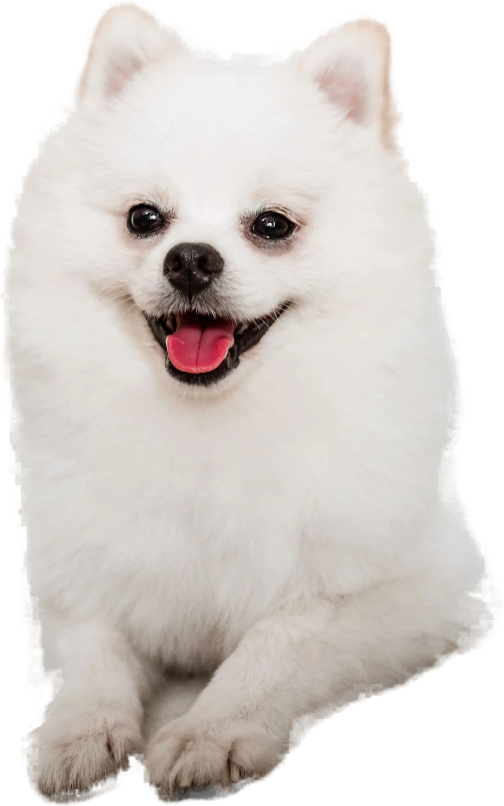
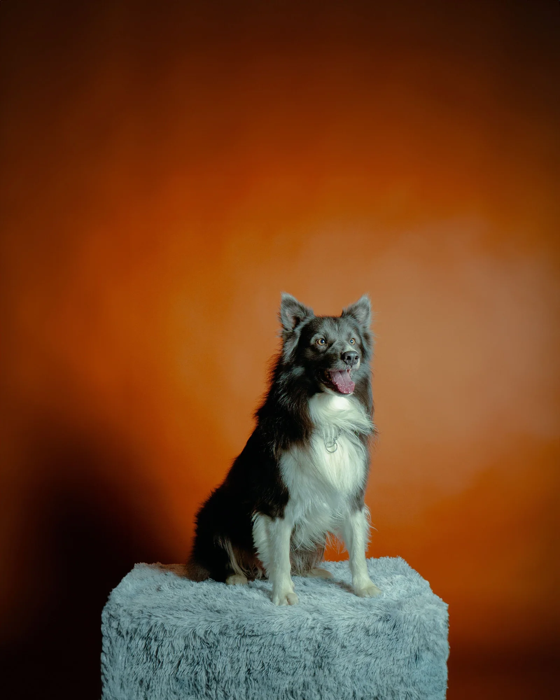
09Capítulo 9 · Pessoas e lojapostura em campo
Postura em campo
Na loja, a equipe vê você o tempo todo, mesmo quando ninguém comenta. A sua postura mostra como a Ourofino cuida da loja, do pet e de quem trabalha ali.
9Postura em campo
Serafina
O promotor do celular
Um gerente me contou por que pediu para não receber mais o promotor de uma marca. A gôndola até ficava arrumada. Só que a equipe via um rapaz parado, rindo pra tela, enquanto atendia a fila. Postura é isso: o que a loja vê de você enquanto você trabalha.
9Postura em campo
Você é a Ourofino dentro da loja
Para o lojista, a Ourofino tem o seu rosto. Ele não conhece a fábrica nem o escritório. Ele conhece quem aparece de uniforme na loja dele.
Se você chega no horário, trata bem a equipe e deixa tudo em ordem, a marca ganha crédito. Se some no celular ou discute com alguém, a marca perde. E a loja compara: recebe promotores de várias marcas e lembra de cada um.
Na prática
Faça o teste no fim da visita: se o gerente contasse a sua visita para o dono, o que ele diria?
9Postura em campo
Sempre e nunca
Evite
Entrar no estoque ou no depósito sem autorização
Discutir com funcionário ou com cliente, por qualquer motivo
Falar mal da marca concorrente ou de outra loja
Prometer prazo, preço ou entrega que dependem de outra pessoa
Faça
Se apresentar ao responsável antes de tocar em qualquer produto
Pedir licença para mexer na gôndola e para instalar material
Deixar a área mais arrumada do que encontrou
Avisar quando terminar e dizer o que ficou pendente
Lembre-se. Na dúvida se pode mexer em algo, pergunte. A pergunta leva dez segundos.
9Postura em campo
O celular na frente da equipe
Dentro da loja, o celular serve para o trabalho: ver o roteiro, consultar o guia, fotografar a gôndola e registrar a visita. Para a equipe, qualquer outro uso parece descaso.
O balconista atende cliente sem parar e vê você de cabeça baixa na tela. Ele não sabe se você está registrando a visita ou vendo vídeo. Na dúvida, pensa o pior. Mensagem pessoal, ligação e rede social ficam para fora da loja ou para o intervalo.
Na prática
Antes de pegar o celular para registrar, avise: “Vou só anotar a visita aqui.” A equipe entende o que você está fazendo.
9Postura em campo
Quando o celular aparece na visita
Roteiro e guia
Para conferir a tarefa do dia e tirar uma dúvida rápida na frente da gôndola.
Fotos de antes e depois
Da gôndola, de frente, depois de avisar o responsável. O capítulo 2 mostra como enquadrar.
Registro da visita
No canal da sua operação, de preferência logo depois de sair da loja.
Ligação urgente
Peça licença, saia da área de venda, fale rápido e volte.
9Postura em campo
R$ 50 milPela LGPD, dado pessoal é qualquer informação ligada a uma pessoa identificada ou que possa ser identificada. A multa por infração chega a 2% do faturamento da empresa, limitada a R$ 50 milhões.
Fonte: Lei 13.709/2018 (Lei Geral de Proteção de Dados), art. 5º, inciso I, e art. 52, inciso II.
Por que a foto mostra só a gôndola
O rosto de uma pessoa numa foto identifica quem ela é. Cliente e funcionário não autorizaram aparecer no seu registro. Se a foto circula num grupo, a empresa responde por isso.
A foto também pode mostrar o que a loja não quer expor: a tela do caixa, um pedido, um papel com preço de compra. A loja confiou em você para entrar. O que aparece na sua foto precisa respeitar essa confiança.
Lembre-se. Antes de enviar, confira a foto inteira, inclusive os cantos.
9Postura em campo
O que entra e o que não entra na foto
Evite
Rosto ou corpo de cliente, mesmo de costas ou no canto
Funcionário da loja, crachá ou uniforme com nome
Tela do caixa, do computador ou papel de pedido
Nota fiscal, cupom ou documento com nome de alguém
Faça
A gôndola inteira, de frente, com os produtos legíveis
Etiquetas de preço e material de PDV instalado
A embalagem com a validade, quando for registrar produto vencido
9Postura em campo
Erro comum
A balconista no grupo da equipe
O que acontece
O promotor fotografa a gôndola com a balconista sorrindo ao lado e posta no grupo da equipe. Ela não autorizou, e agora a foto circula fora da loja.
Faça assim
Fotografe só a gôndola. Se quer agradecer a balconista, agradeça ali mesmo, pelo nome, e conte ao gerente que ela ajudou.
9Postura em campo
Serafina
O dia em que esqueci o crachá
No começo, fui a uma loja sem crachá. Um tutor achou que eu era da casa e me pediu pra indicar um remédio de pulga. Fiquei sem graça, e a balconista também. Desde aquele dia, o crachá fica à vista do começo ao fim da visita.
9Postura em campo
Uniforme e crachá
Todo mundo na loja se pergunta quem é a pessoa mexendo na gôndola. O uniforme e o crachá respondem antes de você falar.
Sem identificação, você parece um estranho, e a equipe fica desconfiada. O tutor também se confunde: acha que você é da loja e pede uma orientação que você não pode dar. Com o crachá à vista, a equipe sabe de onde você é. O tutor sabe que deve procurar o balconista.
Na prática
Crachá na altura do peito, do lado de fora da roupa. No bolso ou virado ao contrário, ele não identifica ninguém.
9Postura em campo
Apresentação na visita
Uniforme
Limpo, completo e do jeito que a sua empresa orienta. Peça amassada ou incompleta passa descuido.
Crachá
À vista durante a visita inteira. Guardado no bolso não vale.
Mãos e cabelo
Mãos limpas para manusear embalagem. Cabelo preso perto de produto e de prateleira.
Calçado fechado
Firme, para subir em escada e carregar caixa com segurança.
Jaleco
Só quando a regra da sua operação pedir, como em ação de atendimento ao tutor.
Lembre-se. Uniforme e crachá apresentam você antes da primeira palavra.
9Postura em campo
23Pela equação de levantamento do NIOSH, o peso recomendado parte de 23 kg na condição ideal: carga junto ao corpo, perto da cintura, sem girar o tronco. Com as mãos acima de 1,75 m, o limite recomendado cai a zero.
Fonte: NIOSH (instituto de saúde ocupacional do governo dos EUA), Equação Revisada de Levantamento de Cargas; tabela de fatores publicada pelo CCOHS, centro canadense de saúde e segurança ocupacional.
Por que a caixa do alto é a mais perigosa
O corpo aguenta menos peso quanto mais longe a carga fica da cintura. Puxar uma caixa da última prateleira, com o braço esticado, junta duas condições ruins: carga longe do corpo e alta demais.
Por isso, suba na escada até a caixa ficar na altura do peito. Desça com ela encostada no corpo. Caixa pesada se divide em partes ou se carrega com ajuda.
9Postura em campo
Segurança na gôndola
Evite
Subir na prateleira, em caixa ou em cadeira com rodinha
Puxar caixa do alto com o braço esticado
Tapar extintor, saída de emergência ou passagem de cliente
Usar cola que danifique a gôndola da loja
Faça
Usar a escada ou a banqueta da loja para alcançar o alto
Dividir a caixa pesada ou pedir ajuda para carregar
Estilete fechado e caixas encostadas, longe da passagem
Fixar material com o adesivo da peça ou fita dupla face
9Postura em campo
2O Código de Defesa do Consumidor considera impróprio para consumo o produto com a validade vencida. Expor esse produto à venda é crime, com pena de detenção de 2 a 5 anos ou multa.
Fonte: Lei 8.078/1990 (Código de Defesa do Consumidor), art. 18, § 6º, inciso I; Lei 8.137/1990, art. 7º, inciso IX.
Por que produto vencido sai da prateleira na hora
Produto vencido exposto coloca o pet em risco e deixa a loja em situação ilegal. Para o tutor, quem vendeu foi a loja. A marca estampada na caixa também perde a confiança dele.
Quando você encontra um produto vencido, a loja ganha a chance de corrigir antes que um tutor leve para casa. Isso é cuidado com o pet e com a loja, e a equipe costuma agradecer.
9Postura em campo
Achou produto vencido ou danificado
1Mostre ao responsávelLeve a embalagem ao gerente e mostre a validade ou o dano. O produto é da loja, e a decisão também.
2Tire da prateleira com licençaCom o ok do gerente, retire na hora. Não deixe para o fim da visita.
3Não descarte nem leve emboraEntregue ao gerente ou deixe onde ele indicar. Troca e descarte seguem a regra da loja e do distribuidor.
4RegistreFoto da embalagem com validade e lote legíveis, mais a quantidade. Nenhum rosto na imagem.
5Avise o supervisorNo mesmo dia, se for produto Ourofino em quantidade ou se o problema se repete.
Lembre-se. Produto vencido de outra marca: não mexa. Avise o gerente com discrição.
9Postura em campo
Quando avisar o supervisor
Avise o supervisor sempre que a solução depende de alguém além de você. Ele só age sobre o que sabe. Se você guarda o problema para si, ele fica do mesmo tamanho ou cresce.
Na postura, três casos pedem aviso no mesmo dia: discussão ou reclamação, acidente na loja e pedido para fazer algo fora da regra. Conte o fato do jeito que foi, sem aumentar e sem diminuir. A lista completa do que avisar está no capítulo 2.
Na prática
Anote logo depois do ocorrido: o que aconteceu, onde, a que horas e com quem. Com o fato anotado, o supervisor resolve mais rápido e consegue defender você.
9Postura em campo
Num conflito na loja
1Não discutaOuça, fale baixo e não rebata, mesmo que a outra pessoa esteja errada.
2Saia da situação com educaçãoAgradeça, diga que vai verificar e, se for o caso, combine outro horário.
3Anote o que aconteceuData, hora, loja, quem estava e o que foi dito, logo depois.
4Avise o supervisor no mesmo diaConte os fatos. Ele decide como conversar com a loja ou com o distribuidor.
9Postura em campo
Como avisar o supervisor
você
“Oi, aqui é a [seu nome]. Passei hoje às 15h no petshop da Rua das Flores.”
você
“O gerente pediu pra eu não mexer na gôndola hoje, porque estavam fazendo inventário. Combinei de voltar quinta de manhã.”
você
“Na saída, um cliente reclamou comigo do preço do WellPET. Só ouvi e disse que ia passar adiante.”
supervisor
“Obrigado por avisar. Eu vejo isso com o vendedor do distribuidor.”
você
“Combinado. As fotos da gôndola já estão no canal da empresa.”
Lembre-se. Avise com o fato anotado: o que, onde, quando e com quem.
9Postura em campo
Teste rápido
Ao tirar a foto de depois, você percebe um cliente de costas no canto da imagem. O que faz?
A foto de registro mostra só a gôndola. Esperar ou mudar o ângulo resolve sem incomodar o cliente, que está ali para comprar.
9Postura em campo
Teste rápido
O gerente levanta a voz e diz que não quer promotor mexendo na gôndola hoje. Qual a atitude certa?
Você é convidado na loja. Sair com educação preserva a relação, e o registro ajuda o supervisor a entender o que houve.
9Postura em campo
Para levar na próxima visita
Para a loja, a Ourofino tem o seu rosto.
Celular só para roteiro, guia, fotos e registro da visita.
Foto mostra só a gôndola, sem pessoas e sem tela do caixa.
Escada para o alto, caixa junto ao corpo, vencido fora da prateleira.
Dependeu de outra pessoa, avise o supervisor no mesmo dia.
10Capítulo 10 · Pessoas e lojaquem é quem
Conhecendo a loja e quem decide
Cada loja funciona de um jeito. Antes de mexer em qualquer produto, descubra que loja é essa, por onde o tutor anda e quem decide cada coisa.
10Conhecendo a loja e quem decide
Serafina
Eu leio a loja antes de abrir a caixa
Antes de abrir a primeira caixa, eu dou uma volta na loja. Vejo que tipo de loja é, por onde o tutor anda e quem manda em quê. Já perdi uma manhã esperando o dono, quando quem liberava o trabalho era a gerente.
10Conhecendo a loja e quem decide
Os três tipos de loja do guia
A mesma ação funciona numa loja e atrapalha em outra. Um display de chão cabe bem na entrada de um petshop grande. Na recepção de uma clínica pequena, ele fecha a passagem e incomoda o atendimento.
Neste guia, as lojas se dividem em petshop, petshop com clínica e clínica com petshop. O que muda entre elas é o centro do negócio. Esse centro define como o tutor compra, quem decide e o que você prioriza.
Na prática
Na chegada, repare se a loja tem consultório e quem atende no balcão: um balconista ou a recepção da clínica. Isso já mostra o tipo da loja.
Lembre-se. Antes de mexer em qualquer coisa, descubra em que tipo de loja você está.
10Conhecendo a loja e quem decide
Petshop
O que é
Loja de bairro ou autosserviço maior. A venda de produtos é o centro do negócio.
Como o tutor compra
Anda pelos corredores, compara e escolhe sozinho. O que está à vista e com preço tem mais chance de sair.
Sua prioridade
Produto exposto, preço visível, material de PDV no lugar certo e cross entre categorias.
Cuidado
Material demais polui a loja. Uma peça bem colocada ajuda mais que cinco espalhadas.
10Conhecendo a loja e quem decide
Petshop com clínica
O que é
A loja continua sendo o centro, com um consultório veterinário dentro ou ao lado.
Como o tutor compra
Parte escolhe sozinha nos corredores. Parte sai da consulta e vai ao balcão buscar o que o veterinário orientou.
Sua prioridade
Farmácia organizada, produto disponível e balconista que sabe onde fica cada coisa.
Cuidado
O consultório é área do veterinário. Material fica na área de venda.
10Conhecendo a loja e quem decide
69%Para 69% dos veterinários, o atendimento clínico está entre as três maiores fontes de faturamento. A venda de produtos aparece para 13%.
Fonte: Sindan, Comissão de Animais de Companhia (Comac), Radar Vet 2025, pesquisa com 805 veterinários (amostra de 2024).
Na clínica, a consulta vem primeiro
Na clínica com petshop, o negócio gira em torno da consulta. A loja existe para o tutor sair com o que o veterinário orientou, sem precisar ir a outro lugar.
Por isso, ali o seu trabalho é discreto: produto disponível, farmácia em ordem e preço à vista. Material grande, ou fora da área de venda, disputa espaço com o atendimento e incomoda quem manda na casa.
Lembre-se. Na clínica, o produto precisa estar lá quando o tutor sai da consulta.
10Conhecendo a loja e quem decide
Clínica com petshop
O que é
O atendimento veterinário é o centro. A loja é pequena e complementa a consulta.
Como o tutor compra
Leva, em geral, o que foi orientado na consulta. Compra na recepção ou no balcão da farmácia.
Sua prioridade
Produto disponível, farmácia em ordem e preço à vista. Aqui, discrição vale mais que quantidade de material.
Cuidado
Peça autorização ao responsável pela clínica antes de instalar qualquer peça, mesmo pequena.
10Conhecendo a loja e quem decide
Erro comum
O wobbler na porta do consultório
O que acontece
O promotor cola um wobbler na porta do consultório, porque por ali passa todo mundo. O veterinário pede para tirar no mesmo dia. A partir daí, a clínica olha o promotor com desconfiança.
Faça assim
Em clínica, o material fica na área de venda: farmácia, balcão e prateleira, junto do produto. A porta e o interior do consultório são área do veterinário.
10Conhecendo a loja e quem decide
As áreas de uma loja pet
Entrada
Nos primeiros passos, o tutor ainda está se situando e olha pouco para produto. Material colado na porta costuma passar batido.
Ração
Cão e gato em lados separados. Área de muito movimento: muita gente vai à loja só para buscar ração.
Acessórios e beleza do pet
Coleira, guia, cama, brinquedo, shampoo e colônia. Tudo isso fica fora da farmácia.
Higiene do ambiente
Desinfetante, eliminador de odor, tapete higiênico e areia de gato. É o lugar do Herbalvet T.A. e do EnziClim.
Banho e tosa e consultório
Serviços com hora marcada. Enquanto espera, o tutor circula e olha a loja com calma.
Balcão e caixa
O balcão costuma ficar junto da farmácia. O caixa é a última chance de o tutor lembrar de algo.
10Conhecendo a loja e quem decide
O caminho do tutor até o balcão
Na maioria das lojas, o tutor faz um caminho parecido. Entra, vai até a ração, passa pelos acessórios e chega ao balcão. No fim, paga no caixa.
A farmácia costuma ficar junto do balcão, no fim desse caminho. Quem veio só buscar ração pode sair sem lembrar que o cão está sem proteção contra pulga. Cada ponto do caminho é uma chance de lembrar. Por isso, material fora desse caminho rende pouco.
Na prática
Ao chegar, ande pela loja como se fosse um tutor. Repare onde as pessoas param, onde esperam e por onde passam reto.
Lembre-se. Material bem colocado fica no caminho que o tutor já faz.
10Conhecendo a loja e quem decide
A planta de uma loja pet
Siga o caminho do tutor da entrada até o caixa. Repare que a farmácia fica colada no balcão e que ração de cão e de gato ficam separadas. O consultório fica fora da área de venda. O capítulo 5 usa esta mesma planta para mostrar onde vai cada material.
Arraste para o lado para ver a planta inteira.
10Conhecendo a loja e quem decide
o que é
Farmácia do petshop
Área da loja com os produtos de saúde animal: antipulgas e carrapaticidas, vermífugos, medicamentos e suplementos. Costuma ficar atrás do balcão ou em área controlada. São produtos de valor mais alto e que pedem orientação na hora da compra.
Exemplo
O WellPET, comprimido para cães contra pulga e carrapato, costuma ficar atrás do balcão. Já o Herbalvet T.A., desinfetante de ambiente, pode ficar fora da farmácia.
10Conhecendo a loja e quem decide
Quem é quem na loja
Dono
Decide o que a loja compra, quanto espaço cada categoria ocupa e as regras da casa. Muitas vezes não está na loja.
Gerente
Cuida do dia a dia: equipe, estoque, reposição e organização. Em geral, é quem autoriza mexer na gôndola.
Balconista
Atende o tutor, tira dúvidas e indica produtos de prateleira. É com quem você mais conversa.
Veterinário
Atende no consultório e orienta o tratamento. Dúvida técnica dele você anota e leva ao supervisor.
Tutor
Responsável pelo pet e cliente da loja. Quer resolver o problema do animal com segurança e sem perder tempo.
Lembre-se. Descubra o nome de cada pessoa e use desde a segunda visita.
10Conhecendo a loja e quem decide
75%Na visão de 805 veterinários, o próprio veterinário é quem mais influencia o tutor. São 75% em vermífugo e antipulga e 91% em vacinas e medicamentos.
Fonte: Sindan, Comissão de Animais de Companhia (Comac), Radar Vet 2025, amostra de 2024.
O veterinário é a primeira referência do tutor
Em saúde animal, o tutor ouve primeiro o veterinário. É ele quem orienta vacina, medicamento, vermífugo e antipulga. O balconista vem em segundo lugar, e é quem está na frente do tutor na hora da compra.
Isso muda o seu trabalho. Na clínica, o produto precisa estar disponível quando o tutor sai da consulta. No petshop, o balconista precisa saber onde está e o que é cada produto. O capítulo 11 mostra o peso do balconista.
10Conhecendo a loja e quem decide
Quem decide o quê
Quem decide cada assunto nos três tipos de loja. Repare que quem autoriza mexer na gôndola nem sempre é quem escolhe o que a loja compra. Use o quadro como ponto de partida e confirme na primeira visita, porque cada loja tem o seu jeito.
Petshopa venda é o centro
Petshop com clínicaa loja é o centro, com consultório
Clínica com petshopo atendimento é o centro
10Conhecendo a loja e quem decide
Quem decide em cada tipo de loja
Decisão
Petshop
Petshop com clínica
Clínica com petshop
O que a loja compra
Dono ou comprador
Dono
Veterinário responsável ou administrador
Mexer na gôndola
Gerente
Gerente
Recepção ou administrador
Instalar material
Gerente ou dono
Gerente
Veterinário responsável
Indicar produto ao tutor
Balconista
Balconista e veterinário
Veterinário
Lembre-se. Quem atende no balcão nem sempre é quem autoriza. Pergunte antes de mexer.
10Conhecendo a loja e quem decide
Na primeira visita, pergunte quem decide
você
“Bom dia! Pra organizar a prateleira da Ourofino e instalar material, com quem eu falo?”
balconista
“Com a gerente. Ela chega às dez.”
você
“Obrigada. Qual é o nome dela?”
balconista
“Márcia.”
você
“Enquanto ela não chega, posso só conferir preço e validade, sem tirar nada do lugar?”
balconista
“Pode, sim.”
10Conhecendo a loja e quem decide
Balconista, gerente e tutor esperam coisas diferentes
O balconista, o gerente e o tutor olham para a sua visita com interesses diferentes. O balconista quer sair da conversa sabendo explicar um produto e onde ele fica. O gerente quer a loja vendendo, sem buraco na prateleira e sem perder tempo com você.
O tutor quer resolver o problema do pet. Ele é cliente da loja, e quem atende é a equipe. Quando você fala do que a pessoa precisa, ela escuta. Quando erra o assunto, ela para de ouvir na primeira frase.
Na prática
Antes de começar a falar, pense no que essa pessoa quer resolver agora.
10Conhecendo a loja e quem decide
Como falar com cada um
Com quem
O que espera de você
Melhor momento
Como falar
Balconista
Saber explicar o produto e achar rápido
Na pausa entre atendimentos
Uma informação útil, em dois minutos
Gerente ou dono
Loja vendendo, sem falta e em ordem
Na chegada e na saída
O que fez, o que faltou, o que precisa dele
Tutor
Resolver o problema do pet sem demora
Só quando ele procura você
Mostre a categoria e chame a equipe da loja
Lembre-se. O que dizer sobre cada produto, para o balconista e para o gerente, está no capítulo 11.
10Conhecendo a loja e quem decide
Quando o tutor acha que você é da loja
tutor
“Moça, você trabalha aqui? Qual desses antipulgas é o melhor?”
você
“Eu sou promotora da Ourofino e vim arrumar esta prateleira. Quem atende aqui é a equipe da loja.”
você
“Os antipulgas para cão ficam deste lado, e os para gato, daquele.”
você
“Vou chamar o balconista pra te ajudar a escolher.”
tutor
“Ah, obrigado.”
10Conhecendo a loja e quem decide
Teste rápido
Você está numa clínica veterinária com petshop e quer instalar um wobbler do Top Dog. Onde ele pode ficar?
Na clínica, o material fica na área de venda, junto do produto. Porta e interior do consultório são área do veterinário. E todo material só entra com autorização.
10Conhecendo a loja e quem decide
Teste rápido
Num petshop, o balconista diz que você pode instalar o display de chão na entrada. O gerente saiu para o almoço. O que você faz?
Quem atende no balcão nem sempre decide sobre material. Display instalado sem o ok de quem decide pode ser retirado. E a loja fica com uma impressão ruim da visita.
10Conhecendo a loja e quem decide
Para levar na próxima visita
Petshop, petshop com clínica e clínica com petshop pedem trabalhos diferentes.
Na clínica, material fica na área de venda, nunca no consultório.
Ande o caminho do tutor antes de decidir onde vai cada coisa.
Quem atende no balcão nem sempre decide. Pergunte e anote o nome.
Balconista, gerente e tutor esperam coisas diferentes da sua visita.
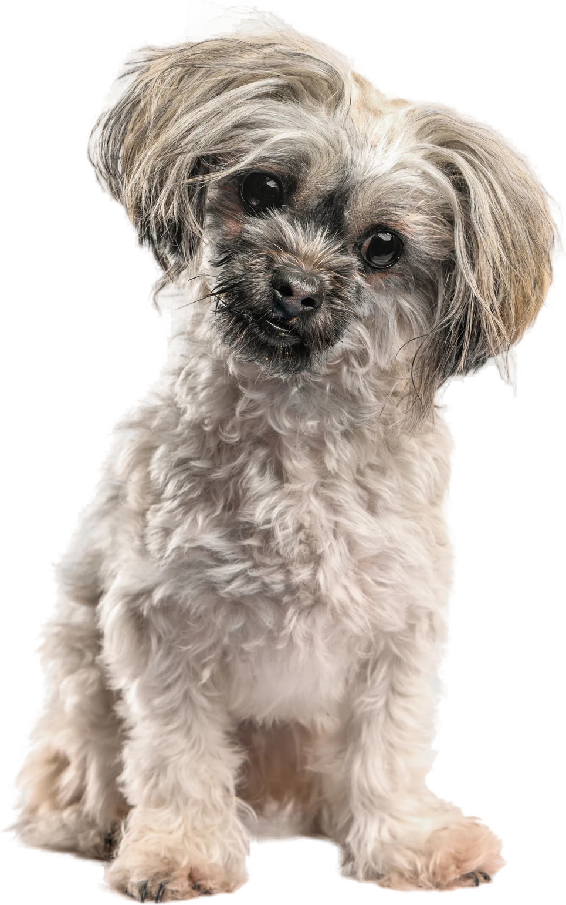
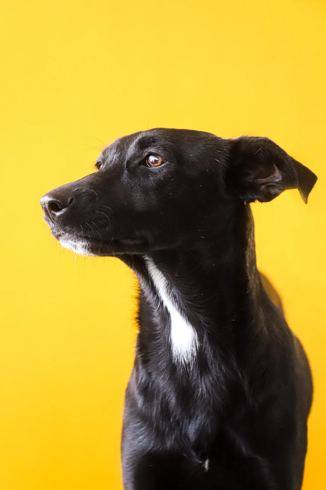
11Capítulo 11 · Produtosprodutos
Como falar de produto: CBV
O balconista indica o produto que ele sabe explicar. O CBV organiza essa explicação em três partes curtas, na língua do tutor.
11Como falar de produto: CBV
Serafina
Eu lia a caixa em voz alta
No começo eu explicava antipulga lendo a embalagem: princípio ativo, miligrama, faixa de peso. O balconista concordava com a cabeça e na semana seguinte não lembrava de nada. Mudou quando aprendi a contar o produto em três partes. É esse jeito que eu te mostro aqui.
11Como falar de produto: CBV
19%Na pesquisa com 805 veterinários, 19% apontam o dono da loja ou o balconista como quem mais influencia o tutor na compra de vermífugo e antipulga.
Fonte: Sindan, Comissão de Animais de Companhia (Comac), Radar Vet 2025, amostra de 2024.
Quem o tutor escuta no balcão
O tutor chega à loja com um problema: o cachorro se coçando, o gato que não aceita comprimido, o cheiro de xixi na sala. Na dúvida, ele pergunta para quem está no balcão.
O veterinário continua sendo a principal referência em saúde, mas o balconista ajuda a decidir muitas compras de vermífugo e antipulga. Por isso o seu trabalho com ele conta tanto: o balconista indica o produto que consegue explicar com segurança.
Lembre-se. Seu trabalho é deixar o balconista seguro para explicar o produto.
11Como falar de produto: CBV
O CBV em três degraus
CBV é a sigla de Característica, Benefício e Vantagem. É um jeito de organizar o que você sabe sobre um produto em três partes. A característica diz o que o produto é. O benefício diz o que isso muda para o pet e para quem cuida dele. A vantagem diz por que escolher este produto.
CCaracterística
O que o produto é ou tem.
Ex.: Comprimido palatável.
BBenefício
O que isso faz pelo pet e pelo tutor.
Ex.: O cão aceita sem briga, e o tutor dá em casa sem estresse.
VVantagem
Por que escolher este.
Ex.: Até 45 dias de proteção com um comprimido.
Exemplo com WellPET, apenas ilustrativo. O argumento oficial de cada produto está no capítulo 11.
11Como falar de produto: CBV
o que é
Característica: o que o produto é
Característica é um fato sobre o produto. Diz o que ele é, o que tem na fórmula ou no formato e como se usa. Está escrita na embalagem ou no material oficial, e ninguém discute.
Exemplo
Pegue uma coleira comum de nylon, da área de acessórios. Característica: fivela de engate rápido e regulagem com cinco furos.
11Como falar de produto: CBV
Quatro perguntas que a característica responde
O que é?
Comprimido, coleira, aplicação na nuca, desinfetante, tablete mastigável. É a forma do produto, o que você vê ao abrir a caixa.
Para quem?
Cão, gato ou o ambiente da casa. Às vezes também o porte ou a faixa de peso escrita na embalagem.
O que faz?
A ação descrita no material oficial: trata pulga e carrapato, atua contra vermes, desinfeta, age contra o cheiro.
Como se usa?
O tutor dá na boca, coloca no pescoço, aplica na pele ou borrifa na superfície. Quantidade e frequência ficam com a embalagem e o veterinário.
11Como falar de produto: CBV
o que é
Benefício: o que muda para o pet e para o tutor
Benefício é o que a característica muda na vida do animal e de quem cuida dele. Responde ao “e daí?” que o tutor pensa quando ouve uma característica. Na frase de benefício, o pet ou o tutor sempre aparecem.
Exemplo
Na coleira de nylon: o tutor coloca e tira em dois segundos, e a mesma coleira acompanha o filhote enquanto ele cresce.
Lembre-se. Se o pet ou o tutor não aparece na frase, ela ainda é característica.
11Como falar de produto: CBV
O teste do “e daí?”
1Escreva a característicaCopie da embalagem ou do material oficial, sem inventar. Exemplo: “fivela de engate rápido”.
2Pergunte “e daí?”Pense como o tutor que está no balcão com pressa e com o cachorro esperando no carro.
3Responda com uma cena da casaColoque o tutor ou o pet fazendo alguma coisa: “coloca e tira a coleira em dois segundos”.
4Confira a fraseSe ainda tem termo técnico, pergunte “e daí?” de novo até sobrar só o que o tutor sente.
11Como falar de produto: CBV
o que é
Vantagem: por que escolher este
Vantagem é o motivo para escolher este produto entre as opções da prateleira. Mostra o que ele entrega de diferente, com base no material oficial. Ela compara sem citar a outra marca e sem falar de preço.
Exemplo
Na coleira de nylon: uma coleira só serve do filhote ao adulto, sem precisar comprar outra a cada fase.
11Como falar de produto: CBV
Vantagem que ajuda e vantagem que atrapalha
Evite
“É muito melhor que a marca do lado.”
“Acaba com a pulga em um dia.”
“Todo veterinário indica este.”
Faça
“Um produto só reúne proteção contra vermes, pulgas, piolhos e sarnas.”
“Um comprimido mantém até 45 dias de proteção.”
“Tem eficácia reconhecida em clínicas e hospitais veterinários.”
Lembre-se. A vantagem sai do material oficial, nunca da comparação com a marca concorrente.
11Como falar de produto: CBV
78%No Radar Pet 2023, 78% dos tutores de cães e 72% dos tutores de gatos consideram o animal um membro da família.
Fonte: Sindan, Comissão de Animais de Companhia (Comac), Radar Pet 2023, publicado no Anuário Sindan 2024.
Por que o balconista lembra do benefício
O balconista ouve falar de muitos produtos, de muitas marcas. O que fica na memória dele é o que responde à pergunta do tutor. E o tutor não pergunta pelo princípio ativo. Ele diz “meu cachorro não para de se coçar” ou “minha gata não engole comprimido”.
O benefício fala a língua dessa pergunta, por isso o balconista repete sem esforço. E fala de alguém que o tutor trata como família. A característica fica guardada para quando o tutor quiser saber mais.
11Como falar de produto: CBV
O CBV do WellPET, passo a passo
1Leia a fonte oficialEmbalagem e material da Ourofino: comprimido palatável para cães, trata pulga e carrapato, até 45 dias de proteção.
2Separe a característica“Comprimido palatável para cães que trata pulga e carrapato.” Palatável quer dizer que tem gosto bom para o animal.
3Pergunte “e daí?”O cão aceita o comprimido como petisco. O tutor dá sem briga, sem esconder na comida.
4Encontre a vantagemUm comprimido mantém até 45 dias de proteção. É o motivo para escolher este.
5Junte em duas frasesO que é, o que muda para o tutor e por que este. Curto o bastante para o balconista repetir.
6Fale em voz altaSe você tropeça na frase, o balconista também vai tropeçar. Encurte até sair natural.
11Como falar de produto: CBV
A frase do WellPET no balcão
você
“Quando o tutor reclamar de pulga ou carrapato no cachorro, lembra do WellPET. É um comprimido que o cão aceita como petisco.”
balconista
“E dura quanto tempo?”
você
“Um comprimido mantém até 45 dias de proteção. Está escrito aqui na caixa.”
balconista
“E se o cachorro já toma outro remédio?”
você
“Essa é com o veterinário dele. O certo é o tutor confirmar com ele antes.”
11Como falar de produto: CBV
Teste rápido
O balconista diz ao tutor: “o cão aceita o comprimido como petisco, sem briga”. Que parte do CBV é essa?
A frase mostra o que muda para o cão e para o tutor em casa. A característica seria “comprimido palatável”.
11Como falar de produto: CBV
Um produto, duas conversas
Na loja você fala com duas pessoas que olham para o mesmo produto com preocupações diferentes. O balconista pensa no tutor que está na frente dele: quer resolver o problema do animal sem errar a indicação. O gerente ou o dono pensa na loja: quer a categoria organizada, sem buraco na prateleira e com o cliente voltando.
O CBV é o mesmo. O que muda é a parte que vai na frente e o que você mostra.
Na prática
Antes de falar, olhe quem está na sua frente. Com o balconista, comece pelo tutor. Com o gerente, comece pela prateleira.
11Como falar de produto: CBV
Balconista e gerente: o que cada um quer ouvir
Balconista
Gerente ou dono
Pensa em
O tutor na frente dele e o animal
A loja, a prateleira e o cliente que volta
O que você destaca
O benefício para o pet e o tutor
Categoria organizada, sem ruptura, com o produto girando
O que você mostra
Onde o produto fica e como reconhecer a caixa
A foto de antes e a de depois da prateleira
Como você termina
Com uma frase curta para ele repetir
Com o que fez e o que ficou pendente
Lembre-se. O produto é o mesmo. Muda o que você coloca na frente da conversa.
11Como falar de produto: CBV
Com o gerente
você
“Organizei os antipulgas por espécie: cão de um lado, gato do outro, cada um com preço.”
gerente
“Ficou mais fácil de achar.”
você
“O balconista também indica mais rápido. Deixei o WellPET na altura dos olhos, junto dos outros antipulgas para cão.”
você
“Com a sua autorização, coloco uma régua de gôndola para sinalizar a área.”
gerente
“Pode colocar.”
11Como falar de produto: CBV
Até onde vai a sua fala
Antipulga, vermífugo e suplemento são produtos de saúde. Cada animal tem peso, idade, raça e histórico diferentes, e às vezes já toma outro remédio. Por isso, dizer quanto dar, por quanto tempo ou se o produto serve para um animal específico é orientação do médico-veterinário.
Você fala do produto como ele está na embalagem e no material oficial. Quando a pergunta é sobre um animal específico, você encaminha. Isso protege o animal, o tutor, a loja e a marca.
Na prática
Regra de bolso: se a resposta depende do animal que o tutor tem em casa, ela é do veterinário.
11Como falar de produto: CBV
O que você pode e o que não pode dizer
Evite
Dizer quanto dar, de quanto em quanto tempo ou por quanto tempo usar
Dizer que o produto serve para o caso de um animal específico
Prometer resultado, como “acaba com a pulga em um dia” ou “cura a coceira”
Falar da marca concorrente, bem ou mal, para valorizar a Ourofino
Faça
Contar o que o produto é, com as palavras da embalagem e do material oficial
Explicar o benefício e a vantagem como estão no CBV aprovado
Mostrar onde o produto fica e como reconhecer a embalagem
Encaminhar dúvida de uso para o veterinário ou para a embalagem
Lembre-se. Dúvida sobre um animal específico é do veterinário, mesmo quando você acha que sabe a resposta.
11Como falar de produto: CBV
Quando a pergunta passa do limite
tutor
“Meu cachorro tem 25 quilos. Quantos comprimidos de vermífugo eu dou?”
você
“Quem pode te dizer isso com segurança é o veterinário dele, porque depende do cachorro.”
você
“A embalagem também traz a orientação de uso. Posso te mostrar onde está escrito.”
tutor
“Tá bom. Vou ligar para a clínica.”
11Como falar de produto: CBV
Erro comum
Responder sobre saúde para ajudar
O que acontece
Um tutor pergunta no corredor se pode dar o vermífugo para a cadela prenhe. O promotor quer ajudar e responde que pode, porque viu isso em outra loja.
Faça assim
Agradeça a pergunta e oriente o tutor a confirmar com o veterinário. Uma resposta errada sobre saúde coloca o animal em risco e expõe a loja e a marca.
11Como falar de produto: CBV
Teste rápido
Uma tutora pergunta se o Banni 3 serve para a gata dela, que está com feridas na pele. O que você faz?
Animal com um problema de saúde precisa de orientação individual. Você pode contar o que o Banni 3 é, mas a indicação para aquela gata é do veterinário.
11Como falar de produto: CBV
Para levar
Característica é o que o produto é. Está na embalagem.
Benefício é o que muda para o pet e para o tutor.
Vantagem é o motivo para escolher este, sem citar concorrente.
Com o balconista, destaque o benefício. Com o gerente, a prateleira.
Dúvida sobre um animal específico vai para o veterinário.
12Capítulo 12 · Produtosprodutos
Produtos heróis
Os heróis são os produtos que você confere primeiro em toda visita. Aqui eles aparecem organizados pela necessidade do animal que cada categoria resolve.
12Produtos heróis
Serafina
Sete produtos antes de tudo
Quando comecei, eu queria conferir tudo da Ourofino em toda loja e saía sem terminar nada. Hoje entro procurando sete produtos. Se eles estão no lugar certo e com preço, o resto da visita anda. Vou te apresentar cada um pela necessidade do animal que ele atende.
12Produtos heróis
O que é um produto herói
Produto herói é o produto que a Ourofino escolhe como prioridade dentro de uma categoria. É o primeiro que você procura na loja. Na gôndola, você confere a exposição dele antes de qualquer outro, e é dele que você fala com o balconista.
Você não precisa decorar o portfólio inteiro. Com os heróis no ponto natural, abastecidos, com preço e com o material certo por perto, a categoria começa bem e fica mais fácil cuidar do resto da linha.
Na prática
Na leitura da loja, procure os sete heróis antes de qualquer outro produto. O que faltar é a primeira pendência da visita.
12Produtos heróis
Os heróis em três categorias
Prevenção e proteção
WellPET, Banni 3, Top Dog e Leevre. Cuidam de pulga, carrapato e vermes. A coleira Leevre também ajuda a repelir o mosquito da leishmaniose.
Desinfecção
Herbalvet T.A. e EnziClim. Cuidam do ambiente onde o pet vive: germes, cheiro e mancha de xixi, cocô e vômito.
Suplementos
Plenipil. Complementa a alimentação do cão com ômega 3, vitamina A, biotina e selênio, em tablete mastigável.
12Produtos heróis
94%Cerca de 94% dos casos de leishmaniose visceral das Américas acontecem no Brasil. Na área urbana, o cão doméstico é o principal reservatório da doença.
Fonte: OPAS, Organização Pan-Americana da Saúde, página “Leishmaniose visceral” (média dos últimos cinco anos).
Prevenção e proteção: do que o animal precisa
Cão e gato convivem com parasitas em casa, no quintal e no passeio. Pulga e carrapato vivem por fora do corpo. Os vermes, por dentro. Em muitas regiões ainda há o mosquito que transmite a leishmaniose.
O tutor procura esta categoria para proteger o animal antes do problema ou para tratar quando ele aparece. Como a proteção tem prazo, o tutor volta para comprar de novo. Na loja, isso vira giro: o produto sai e precisa voltar para a prateleira.
Lembre-se. Prevenção e proteção fica na farmácia. Fora dela, o que vai é o material.
12Produtos heróis
WellPET: a ficha
O que é
Comprimido palatável que trata infestações de pulga e carrapato, com até 45 dias de proteção.
Para quem
Cães. Cada caixa vale para uma faixa de peso do cão, escrita na embalagem. Cada faixa é um item diferente na prateleira.
Onde fica
Na farmácia, atrás do balcão ou na área controlada, junto dos antiparasitários para cão e ao lado da marca concorrente.
Cross possível
Material na ração de cão e na área de coleiras e guias. Cão que passeia precisa estar protegido. O produto fica na farmácia.
Material indicado
Wobbler na prateleira da farmácia, junto das caixas. Nas outras áreas, wobbler ou régua que leve o tutor a pedir no balcão.
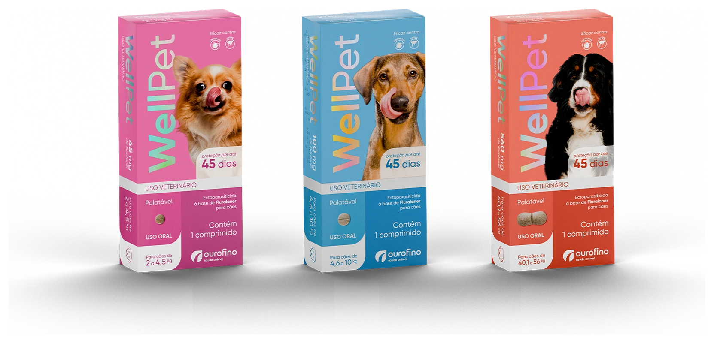
12Produtos heróis
WellPET: como falar dele
Parte
O que dizer
Característica
Comprimido palatável para cães que trata pulga e carrapato
Benefício
O cão aceita como petisco, e o tutor dá sem briga
Vantagem
Um comprimido mantém até 45 dias de proteção
12Produtos heróis
Banni 3: a ficha
O que é
Spot on, aplicado na pele da nuca, com múltiplas proteções contra vermes redondos e chatos, piolhos, sarnas e pulgas.
Para quem
Gatos. Vem em flaconetes por faixa de peso do gato, escrita na embalagem.
Onde fica
Na farmácia, junto dos antiparasitários para gato, separado da área de cão e ao lado da marca concorrente para gato.
Cross possível
Material na área de ração de gato e de areia sanitária. Quem compra ração ou areia de gato tem um gato em casa.
Material indicado
Wobbler na prateleira de gato da farmácia e na ração de gato. Material de Banni 3 nunca vai para a área de cão.
Lembre-se. Cão e gato não dividem material. Confira a espécie antes de colar qualquer peça.
12Produtos heróis
Banni 3: como falar dele
Parte
O que dizer
Característica
Spot on para gatos, aplicado na pele da nuca, em flaconete por faixa de peso
Benefício
O tutor aplica em poucos segundos, sem precisar fazer o gato engolir comprimido
Vantagem
Um produto só reúne proteção contra vermes redondos e chatos, pulgas, piolhos e sarnas
12Produtos heróis
Top Dog: a ficha
O que é
Vermífugo em comprimido palatável, “com sabor que os cães adoram”. Atua contra vermes redondos e chatos e é indicado também para giardíase.
Para quem
Só para cães. As apresentações mudam conforme o peso do cão, escrito na embalagem.
Onde fica
Na farmácia, junto dos vermífugos para cão, ao lado da marca concorrente. As faixas de peso ficam juntas, numa coluna.
Cross possível
Cross selling com o Herbalvet T.A.: o vermífugo cuida do cão, o desinfetante cuida do ambiente onde ele vive.
Material indicado
Wobbler na prateleira de vermífugos. Se a loja tiver o display do Top Dog, ele vai no balcão da farmácia, abastecido.
12Produtos heróis
Top Dog: como falar dele
Parte
O que dizer
Característica
Vermífugo em comprimido palatável para cães, indicado também para giardíase
Benefício
O cão aceita o comprimido pelo sabor, e o tutor vermifuga sem briga
Vantagem
Atua contra vermes redondos e chatos e na giardíase, no mesmo produto
12Produtos heróis
Leevre: a ficha
O que é
Coleira para cães que auxilia no controle de pulgas e carrapatos e na repelência ao mosquito transmissor da leishmaniose visceral canina.
Para quem
Cães, em duas apresentações: uma para porte pequeno a médio e outra para porte grande.
Onde fica
Na farmácia, com os antiparasitários para cão, ao lado da marca concorrente de coleira.
Cross possível
Material na área de coleiras comuns e guias. Quem está escolhendo coleira está pensando no passeio.
Material indicado
Wobbler na farmácia e material de sinalização na área de coleiras e guias, apontando para o balcão.
Lembre-se. Leishmaniose é assunto sério. Fale só o que está no material oficial.
12Produtos heróis
Leevre: como falar dele
Parte
O que dizer
Característica
Coleira para cães que auxilia no controle de pulgas e carrapatos, em dois tamanhos por porte
Benefício
O tutor coloca no pescoço e o cão sai para o passeio com ajuda contra pulga e carrapato
Vantagem
Também ajuda a repelir o mosquito que transmite a leishmaniose visceral canina
12Produtos heróis
A giárdia, protozoário que causa diarreia, pode sobreviver de semanas a meses fora do corpo, por exemplo no solo.
Fonte: CDC, Centros de Controle e Prevenção de Doenças dos Estados Unidos, página “About Giardia”.
Desinfecção: do que o ambiente precisa
O pet vive no chão da casa, no quintal, no canil, na mesa do banho e tosa. Xixi, cocô e vômito deixam cheiro, mancha e germes nesses lugares. A categoria de desinfecção cuida do ambiente onde o animal vive.
Esses produtos não pedem orientação no balcão. Por isso podem ficar fora da farmácia, na higiene do ambiente, onde o tutor pega sozinho. Quando o assunto é giárdia, o cuidado com o cão e com o ambiente anda junto.
Lembre-se. Ali o tutor pega sozinho: gôndola cheia e preço à vista não podem faltar.
12Produtos heróis
Herbalvet T.A.: a ficha
O que é
Desinfetante bactericida, fungicida, protozoaricida e viricida, com ação desodorizante. É biodegradável e não corrosivo. Frasco de 1 litro.
Para quem
O ambiente: pisos, paredes, canis, gatis, mesas de atendimento e salas de banho e tosa. Usado em clínicas e hospitais veterinários.
Onde fica
Na higiene do ambiente, perto de eliminadores de odor e tapetes higiênicos. Pode ficar fora da farmácia, no autosserviço.
Cross possível
Lado a lado com o EnziClim. Cross selling com o Top Dog, pela conversa do balconista. Material na área de tapetes e areia.
Material indicado
Régua de gôndola ou wobbler na higiene do ambiente. Display de chão quando a loja tiver espaço e a gôndola estiver cheia.
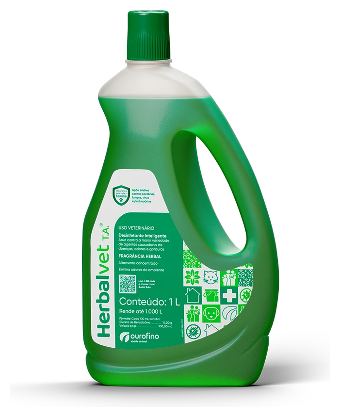
12Produtos heróis
Herbalvet T.A.: como falar dele
Parte
O que dizer
Característica
Desinfetante de ação ampla, desodorizante, biodegradável e não corrosivo
Benefício
Desinfeta e tira o cheiro do canil, do gatil e do piso onde o pet vive, sem estragar a superfície
Vantagem
Age contra bactérias, fungos, protozoários e vírus no mesmo produto, com eficácia reconhecida em clínicas veterinárias
12Produtos heróis
EnziClim: a ficha
O que é
Solução com microrganismos vivos que atua de forma natural contra odores e manchas de urina, fezes e vômito. Frascos de 220 e 480 ml.
Para quem
A casa do tutor e qualquer superfície onde o pet fez xixi, cocô ou vomitou.
Onde fica
Na higiene do ambiente, lado a lado com o Herbalvet T.A. Os dois cuidam do ambiente e se completam.
Cross possível
Material na área de tapetes higiênicos e areia sanitária. Quem compra tapete convive com xixi fora do lugar.
Material indicado
Régua de gôndola ou wobbler na higiene do ambiente. Um wobbler por produto, sem cobrir a embalagem nem o preço.
12Produtos heróis
EnziClim: como falar dele
Parte
O que dizer
Característica
Solução com microrganismos vivos, para borrifar na superfície
Benefício
Age contra o cheiro e a mancha de xixi, cocô e vômito que o pet deixa na casa
Vantagem
Os microrganismos vivos agem sobre o resíduo orgânico, de forma natural, em superfícies diversas
12Produtos heróis
76%Na pesquisa com 805 veterinários, 76% apontam o veterinário como quem mais influencia o tutor na compra de suplemento. O dono da loja ou o balconista vem em segundo, com 16%.
Fonte: Sindan, Comissão de Animais de Companhia (Comac), Radar Vet 2025, amostra de 2024.
Suplementos: do que o animal precisa
Suplemento é um complemento da alimentação. Ele entrega nutrientes além do que vem na ração e não substitui a ração nem o remédio.
O tutor costuma chegar a esta categoria pensando no pelo, na pele ou na idade do animal, e muitas vezes já com a indicação do veterinário. Por isso a frase do balconista precisa ser simples e fiel ao material oficial. Promessa de pelo novo em poucos dias não cabe aqui.
Lembre-se. Suplemento complementa a ração. Ele não substitui alimento nem remédio.
12Produtos heróis
Plenipil: a ficha
O que é
Suplemento em tablete mastigável e palatável, com ômega 3 (EPA e DHA), vitamina A, biotina e selênio. Na loja aparece como Plenipil Snacks.
Para quem
Cães de todas as idades e fases da vida. Na operação, é o suplemento ligado ao cuidado com a pele e o pelo.
Onde fica
Na farmácia, junto dos suplementos para cão, ao lado da marca concorrente.
Cross possível
Material na área de ração para pele sensível. O tutor que escolhe esse alimento já está cuidando da pele e do pelo do cão.
Material indicado
Wobbler na prateleira de suplementos e material na área de ração para pele sensível, apontando para o balcão.
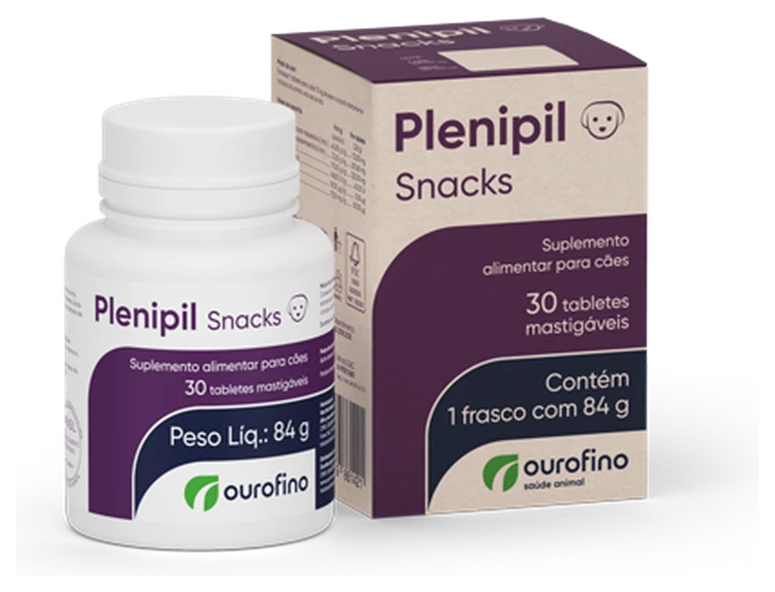
12Produtos heróis
Plenipil: como falar dele
Parte
O que dizer
Característica
Tablete mastigável com ômega 3 (EPA e DHA), vitamina A, biotina e selênio
Benefício
O cão come como petisco, e o tutor complementa a alimentação sem briga
Vantagem
Vários nutrientes num tablete só, para cães de todas as idades
12Produtos heróis
Teste rápido
A loja quer montar um ponto com heróis da Ourofino no corredor, onde o tutor pega sozinho. Qual destes pode ficar ali?
Desinfecção não pede orientação no balcão e fica na higiene do ambiente. WellPET e Banni 3 ficam na farmácia; fora dela, o que vai é o material.
12Produtos heróis
Para levar
Confira os sete heróis antes de qualquer outro produto.
Prevenção e proteção fica na farmácia; fora dela vai só o material.
Herbalvet T.A. e EnziClim ficam lado a lado na higiene do ambiente.
Material de cão na área de cão, material de gato na área de gato.
Use o CBV aprovado e leve dúvida de uso ao veterinário.
13Capítulo 13 · Na gôndolaprateleira ideal
Prateleira ideal
A prateleira ideal mostra onde cada categoria da Ourofino deve ficar na farmácia da loja pet. Você leva cinco regras na cabeça e adapta ao espaço que encontrar.
13Prateleira ideal
Serafina
Eu não carrego desenho de prateleira
Cada farmácia que eu visito tem um tamanho e um móvel diferente. Se eu levasse um desenho para copiar, ele não serviria em quase nenhuma. Então eu levo cinco regras na cabeça e decido olhando o espaço de verdade. São essas regras que eu te passo aqui.
13Prateleira ideal
o que é
Planograma
O desenho que mostra onde cada produto fica na prateleira, frente por frente, com a quantidade de cada um. Redes grandes usam planograma detalhado. Este guia usa uma visão mais simples, por categoria: a prateleira ideal.
Exemplo
Um planograma diz “três frentes de WellPET na segunda prateleira, à esquerda”. A prateleira ideal diz “proteção do cão na altura dos olhos, ao lado da concorrente”.
13Prateleira ideal
A farmácia vista de longe
Repare em três coisas. Os blocos estão agrupados pelo que o animal precisa. Prevenção e proteção ocupam a altura dos olhos e as prateleiras de cima. E cada bloco da Ourofino está encostado no bloco concorrente que faz a mesma coisa.
AntipulgasWellPET e Leevre juntosConcorrente ao ladona mesma alturaVermífugosTop Dog por faixa de pesoSuplementospele e pelo juntos
13Prateleira ideal
Por que o guia usa regras
O portfólio da Ourofino Pet é grande, e cada loja tem uma farmácia diferente. Um planograma produto por produto mudaria a cada lançamento e não caberia numa farmácia de duas prateleiras.
As regras cabem em qualquer espaço. Na farmácia pequena, você aplica as regras com menos produtos. Na grande, com a linha completa.
Você organiza dentro do espaço que a loja já destina à Ourofino. Se enxergar uma oportunidade de mais espaço, informe o seu supervisor.
Na prática
Leve as regras, olhe o móvel que a loja tem e decida na hora. Se a farmácia já estiver boa, mexa só no que as regras pedem.
Lembre-se. A prateleira ideal é uma referência para adaptar. Ninguém copia o desenho inteiro.
13Prateleira ideal
As cinco regras
Agrupe por necessidade
Produtos para o mesmo problema do animal ficam juntos, como tudo o que protege o cão de pulga e carrapato.
Zona quente para o que mais sai
A faixa na altura dos olhos fica com o que o tutor mais procura e com a campanha do momento.
De cima para baixo
Ocupe primeiro as prateleiras de cima e do meio. Atrás do balcão, o que fica baixo some da vista.
Ao lado da concorrente
Cada bloco da Ourofino encosta no bloco concorrente da mesma função, na mesma altura.
Cão de um lado, gato do outro
Dentro de cada bloco, separe as espécies para o balconista achar rápido e o tutor não levar o produto errado.
13Prateleira ideal
Agrupar pelo que o animal precisa
O tutor chega à farmácia com uma necessidade, quase nunca com o nome do produto. Ele diz “quero alguma coisa contra pulga para o meu cão” ou “preciso do vermífugo”.
Quando a farmácia está organizada pela necessidade, o balconista vai direto ao bloco certo. O tutor vê as opções lado a lado e escolhe ali.
Misturar por marca ou por ordem de chegada obriga o balconista a procurar. Enquanto ele procura, o tutor espera e a venda esfria.
Na prática
Use as categorias da Ourofino Pet: prevenção e proteção, suplementos e desinfecção. Dentro de prevenção e proteção, separe o que é de cão do que é de gato.
13Prateleira ideal
Os blocos da Ourofino na loja
Bloco
Necessidade do animal
Heróis da Ourofino
Onde fica
Prevenção e proteção, cão
pulga, carrapato e vermes
WellPET, Leevre e Top Dog
farmácia, zona quente, lado do cão
Prevenção e proteção, gato
pulgas, piolhos, sarnas e vermes
Banni 3
farmácia, zona quente, lado do gato
Suplementos
pele e pelo do cão
Plenipil
farmácia, logo depois dos blocos de proteção
Desinfecção
ambiente desinfetado e sem odor
Herbalvet T.A. e EnziClim
higiene do ambiente, fora da farmácia
13Prateleira ideal
12%A marca nas duas prateleiras de cima foi escolhida 12% mais vezes do que nas duas de baixo. O teste ouviu 348 compradores.
Fonte: Chandon, Hutchinson, Bradlow e Young, “Does In-Store Marketing Work?”, INSEAD, 2008 (publicado no Journal of Marketing em 2009).
Por que a zona quente e as prateleiras de cima
Na farmácia atrás do balcão, o tutor fica do outro lado, a um ou dois passos. Ele enxerga a parede de prateleiras por cima do balcão. O que fica abaixo da linha do balcão some da vista dele.
O comprador também tende a ver o que está no alto como mais importante. Por isso o que o tutor mais procura vai para a zona quente e para as prateleiras de cima.
Lembre-se. O que fica abaixo da linha do balcão o tutor não vê.
13Prateleira ideal
Como achar a zona quente da farmácia
1Vá para o lado do tutorsaia de trás do balcão e fique no lugar onde o tutor espera para ser atendido.
2Olhe reto, em péa prateleira que fica na altura dos seus olhos é o centro da zona quente.
3Marque a linha do balcãoveja até onde o balcão esconde. Abaixo dessa linha fica o estoque de apoio ou o que sai menos.
4Olhe para o meioo centro da parede recebe mais olhares que as pontas. Prevenção e proteção ficam ali.
5Volte e arrumemonte os blocos pensando no que você viu do lado do tutor.
13Prateleira ideal
Ao lado da concorrente
O tutor que entra pedindo a marca que já conhece olha para onde ela está. Se a Ourofino está encostada nela, ele vê as duas no mesmo olhar e pode comparar.
Se a Ourofino fica num canto separado para aparecer sozinha, o tutor nem chega a ver. Ele leva o que já conhecia.
A exposição da concorrente é da loja, e você não mexe nela. Você arruma o bloco da Ourofino para ficar encostado, na mesma altura e com a frente bem feita.
Na prática
Antipulga ao lado de antipulga, vermífugo ao lado de vermífugo, produto de gato ao lado de produto de gato.
13Prateleira ideal
Na farmácia: certo e errado
Evite
Ourofino abaixo da linha do balcão, onde o tutor não vê
Produtos da Ourofino espalhados, um em cada canto
Tirar, cobrir ou empurrar o produto da concorrente
Produto de gato misturado com produto de cão
Faça
Prevenção e proteção na altura dos olhos de quem está do lado do tutor
Bloco da Ourofino encostado no bloco concorrente da mesma função
Cão de um lado, gato do outro, dentro de cada bloco
Etiqueta de preço visível em cada produto
13Prateleira ideal
Cão de um lado, gato do outro
Cada produto é feito para uma espécie, e a embalagem diz qual. WellPET, Leevre e Top Dog são para cão. Banni 3 é para gato.
Com as espécies misturadas, o balconista perde tempo procurando. E o tutor pode levar para casa o produto da espécie errada.
Separar também ajuda o tutor de gato. Ele encontra as opções do gato juntas e não precisa procurar no meio das de cão.
Na prática
Na farmácia pequena, divida a mesma prateleira: cão de um lado, gato do outro. O que importa é a separação ficar clara.
Lembre-se. Leia na embalagem para qual espécie é o produto antes de colocar na prateleira.
13Prateleira ideal
Como adaptar ao tamanho da farmácia
Farmácia pequena
Uma ou duas prateleiras visíveis. Prevenção e proteção na altura dos olhos, cão e gato separados. Suplemento entra se sobrar espaço.
Farmácia média
Os blocos de proteção no centro da zona quente e os suplementos logo depois. A prateleira de baixo fica para estoque de apoio.
Farmácia grande
Todos os blocos, mais frentes no que sai mais e espaço para a campanha, sem desmontar os blocos.
Clínica com petshop
A farmácia é menor, e o veterinário orienta a compra. Foque em produto disponível, limpo, com preço e dentro da validade.
13Prateleira ideal
28%Com o dobro de frentes, de 4 para 8, a marca foi notada 28% mais vezes e escolhida 10% mais.
Fonte: Chandon, Hutchinson, Bradlow e Young, “Does In-Store Marketing Work?”, INSEAD, 2008 (publicado no Journal of Marketing em 2009).
Quando sobra espaço: por que mais frentes ajudam
Frente é cada embalagem virada para o tutor, lado a lado na prateleira. Quanto mais frentes, maior a mancha de cor do produto e mais fácil o olho achar.
Na farmácia grande, dê mais frentes ao que sai mais, dentro do espaço que a loja destina à Ourofino. O ganho diminui depois de certo ponto, então não encha uma prateleira inteira com um item só.
13Prateleira ideal
Arrumando a farmácia na visita
1Fotografe antesdo lado do tutor, de frente para a parede de prateleiras. Essa foto é a sua comparação.
2Leia o que já existeveja onde a Ourofino está, quantas frentes tem e o que está faltando ou perto de vencer.
3Ache a zona quentedo lado do tutor, na altura dos olhos e no centro da parede.
4Monte os blocospor necessidade, cão de um lado e gato do outro, encostados na concorrente da mesma função.
5Confira preço e validadecada produto com etiqueta visível e o vencimento mais próximo na frente.
6Fotografe depoisdo mesmo ponto da primeira foto. Se viu oportunidade de mais espaço, informe o seu supervisor.
13Prateleira ideal
Erro comum
Copiar a prateleira ideal igualzinha
O que acontece
O promotor tenta reproduzir a referência inteira numa farmácia com metade do tamanho. Desmonta o que a loja já tinha, não cabe tudo, e o balconista passa a semana sem achar os produtos.
Faça assim
Leve as regras e aplique no espaço que existe. Combine com o balconista antes de mudar um bloco de lugar e mostre a ele onde cada coisa ficou.
13Prateleira ideal
Serafina
A dica que eu mais repito
Antes de arrumar qualquer farmácia, eu saio de trás do balcão e olho do lado do tutor. Na primeira vez que fiz isso, vi que metade da Ourofino estava escondida pelo balcão. Desde então, arrumo sempre olhando de lá.
13Prateleira ideal
Teste rápido
A farmácia tem uma prateleira na altura dos olhos do tutor e duas abaixo da linha do balcão. Onde fica a proteção do cão da Ourofino?
Proteção é o que o tutor mais procura e vai na zona quente, ao lado da concorrente. Abaixo da linha do balcão o tutor não enxerga.
13Prateleira ideal
Teste rápido
A farmácia de uma clínica com petshop tem uma prateleira só. O que você prioriza?
Com pouco espaço, fica o que o tutor mais procura. Produto disponível, limpo e com preço vem antes de qualquer outra coisa.
13Prateleira ideal
Para levar
Agrupe os produtos pelo que o animal precisa.
Prevenção e proteção na zona quente e nas prateleiras de cima.
Bloco da Ourofino encostado na concorrente da mesma função.
Cão de um lado, gato do outro.
Adapte as regras ao espaço real e trabalhe no espaço da Ourofino.
14Capítulo 14 · Fechamentoconsiderações finais
Considerações finais
O guia termina aqui. O trabalho continua na próxima loja, com o mesmo cuidado em cada visita.
14Considerações finais
Serafina
Chegamos ao fim
Chegamos ao fim do guia. Se você leu tudo, já sabe mais de trade do que eu sabia no meu primeiro ano de rua. Antes da sua próxima loja, quero deixar com você o que eu levaria se só pudesse levar pouca coisa.
14Considerações finais
O que levar daqui
Produto na prateleira vem primeiro
Sem produto, preço e validade em ordem, nenhum material vende. Confira o básico antes de qualquer outra tarefa.
O tutor decide na frente da prateleira
Quem não acha o produto logo leva outro. Por isso a prateleira em ordem continua vendendo depois que você sai.
Cada material tem um lugar
Perto do produto que ele anuncia, na altura de quem compra, sem cobrir preço nem produto.
Ponto natural nunca fica vazio
O ponto extra soma. Se você esvaziar a gôndola para montá-lo, o tutor perde o lugar onde procura.
Você é convidado na loja
Apresente-se, peça licença, deixe tudo arrumado e cumpra o que combinou.
Assunto que não é seu, você avisa
Preço, desconto, dose e tratamento têm outro responsável. Anote o pedido e avise o seu supervisor.
14Considerações finais
O hábito de cada visita
Depois de algumas semanas, a ordem da visita vira hábito. Você prepara antes de sair, se apresenta, lê a loja e fotografa. Depois corrige o básico, executa a prioridade, conversa com a equipe, fotografa de novo, encerra e registra.
O hábito é o que segura o padrão nos dias difíceis, com loja cheia e rota atrasada. Nesses dias, você não precisa decidir o que vem depois. Segue a ordem, e o essencial fica feito.
Na prática
Nas primeiras semanas, abra o checklist da visita em toda loja. Quando perceber que já não precisa olhar, abra uma vez por semana para conferir se nada ficou para trás.
Lembre-se. Nos dias difíceis, siga a ordem da visita.
14Considerações finais
Como continuar aprendendo depois do guia
1Volte ao capítulo da tarefaAntes de uma tarefa nova, como montar um ponto extra, releia o capítulo dela no celular.
2Compare suas fotosUma vez por mês, compare as fotos da mesma loja e veja o que voltou a dar problema.
3Refaça o teste finalDe tempos em tempos, faça de novo. As respostas erradas mostram qual capítulo vale reler.
4Leve as dúvidas ao supervisorAnote o que a loja perguntou e você não soube responder. Isso vira assunto do próximo treinamento.
14Considerações finais
Serafina
Quando eu não sei a resposta
Até hoje tem pergunta que eu não sei responder na hora. Quando acontece, eu falo a verdade: “Não sei agora. Vou confirmar e te trago a resposta na próxima visita.” E trago. Em todos esses anos, responder assim nunca me fez perder uma loja.
14Considerações finais
Onde buscar ajuda
Dúvida
Com quem
Onde no guia
Como fazer uma tarefa na loja
Seu supervisor
O capítulo da tarefa, pelo Índice
Uso, dose ou indicação de um produto
Médico-veterinário, bula e material técnico oficial da Ourofino
1Antes de sairMarque os itens de preparação ainda em casa ou no carro, loja por loja.
2Durante a visitaOs itens seguem a ordem dos oito passos. Marque conforme for fazendo.
3Depois da visitaOs últimos itens lembram o registro, o aviso ao supervisor e a próxima visita.
4Limpe para a próxima lojaUse o botão de limpar e comece a próxima visita com tudo em branco.
Lembre-se. O que ficar em branco no checklist vira a primeira tarefa da próxima visita.
14Considerações finais
Serafina
Agora, o teste final
Agora faz o teste final comigo. São situações de loja de todos os capítulos, no mesmo formato dos testes que você já fez. Tenta responder sem consultar. No fim, o placar mostra quantas você acertou, e a explicação de cada uma mostra o que reler.
14Considerações finais
Serafina
Tá bem cuidado
Foi bom andar com você até aqui. Na próxima loja, começa pela prateleira e pelo básico, do jeito que a gente viu. Quando o tutor achar o produto, com preço, e o balconista souber explicar, tá bem cuidado. A gente se vê na rua.
Fechamentona loja
Checklist da visita
Marque cada item antes, durante e depois da visita, na ordem dos oito passos. O que ficar em branco vira a primeira tarefa da próxima.
Checklist da visita
Antes da visita
marcados
Checklist da visita
Durante · 1. Chegue e se apresente
marcados
Checklist da visita
Durante · 2. Leia a loja
marcados
Checklist da visita
Durante · 3. Fotografe antes
marcados
Checklist da visita
Durante · 4. Corrija o básico
marcados
Checklist da visita
Durante · 5. Execute a prioridade do dia
marcados
Checklist da visita
Durante · 6. Converse com a equipe
marcados
Checklist da visita
Durante · 7. Fotografe depois
marcados
Checklist da visita
Durante · 8. Encerre com o responsável
marcados
Checklist da visita
Depois da visita
marcados
Fechamentoconsulta rápida
Glossário
Todos os termos do guia em linguagem simples, cada um com um exemplo de loja pet.
Glossário
A a B
Abastecimento
Levar o produto do estoque da loja para a gôndola, para a prateleira ficar cheia.Exemplo: colocar na prateleira as caixas de WellPET que estavam no depósito.
Adesivo de chão
Material de PDV colado no piso, com seta, que mostra o caminho até um produto que o tutor não vê da porta. Nunca vai em piso molhado nem na clínica.Exemplo: adesivo no corredor apontando para o balcão da farmácia.
Antiparasitário
Produto que combate parasitas, como pulga, carrapato e vermes.Exemplo: WellPET, Banni 3, Top Dog e Leevre.
Área controlada
Parte da loja onde o tutor não pega o produto sozinho e precisa pedir ao balconista, como a farmácia atrás do balcão.Exemplo: o WellPET costuma ficar na área controlada.
Autosserviço
Área ou loja em que o tutor pega o produto sozinho na prateleira.Exemplo: o corredor de higiene do ambiente, onde ficam o Herbalvet T.A. e o EnziClim.
Balconista
Funcionário da loja que atende o tutor no balcão, tira dúvidas e indica produtos. Indica com mais segurança o produto que sabe explicar.Exemplo: o tutor pergunta ao balconista qual antipulga levar para o cachorro.
Benefício
Segunda parte do CBV. Diz o que a característica muda na vida do pet e de quem cuida dele, e responde ao “e daí?” do tutor.Exemplo: “o cão aceita o comprimido como petisco, sem briga”.
Biodegradável
Que se decompõe na natureza sem deixar resíduo que agrida o ambiente.Exemplo: o Herbalvet T.A. é biodegradável.
Glossário
B a C
Blocagem
Agrupar os produtos da mesma linha num bloco só, em vez de espalhar pela gôndola. Na blocagem vertical, a linha ocupa uma coluna; na horizontal, uma prateleira de ponta a ponta.Exemplo: as faixas de peso do Top Dog uma embaixo da outra, numa coluna.
Campanha
Ação da marca com data para começar e terminar, com materiais próprios. Quando acaba, o material sai da loja.Exemplo: o wobbler de campanha de antipulga que você retira na visita seguinte ao fim da campanha.
Canal
Tipo de loja por onde o produto chega ao tutor. Neste guia: petshop, petshop com clínica e clínica veterinária com petshop.Exemplo: o petshop de bairro é um canal; a clínica com petshop é outro.
Cartaz
Material de PDV impresso, grande, para parede, vitrine ou área de espera. Passa uma mensagem que não cabe na prateleira.Exemplo: cartaz de campanha de antipulga na parede da sala de espera.
Categoria
Grupo de produtos que atende a mesma necessidade do animal ou do tutor.Exemplo: prevenção e proteção, desinfecção e suplementos.
Característica
Primeira parte do CBV. Um fato sobre o produto: o que ele é, o que tem e como se usa. Está na embalagem e no material oficial.Exemplo: “comprimido palatável para cães que trata pulga e carrapato”.
CBV
Sigla de Característica, Benefício e Vantagem. Jeito de organizar a fala sobre um produto: o que ele é, o que muda para o pet e o tutor, e por que escolher este.Exemplo: comprimido palatável (C), o cão aceita como petisco (B), até 45 dias de proteção (V).
Clínica veterinária com petshop
Canal em que o atendimento veterinário é o centro e a loja complementa a consulta. Pede material discreto, longe do consultório.Exemplo: a clínica que vende na recepção os produtos que o veterinário orientou.
Glossário
C a D
Clip strip
Tira com ganchos, pendurada na lateral da gôndola, onde ficam produtos pequenos e leves. Leva um item para perto de outra categoria.Exemplo: clip strip com produtos em sachê na lateral da gôndola de acessórios.
Concorrente
Marca que disputa o mesmo tutor na mesma categoria. No guia ela não é citada pelo nome.Exemplo: o antipulga de outra marca na prateleira ao lado do WellPET.
Cross merchandising
Levar o material de um produto para outra área da loja, onde o tutor pode lembrar que precisa dele. O produto continua no ponto natural.Exemplo: wobbler de WellPET na área de coleiras e guias, com o WellPET na farmácia.
Cross selling
Juntar dois produtos que se completam no uso, para o tutor levar os dois. Acontece na prateleira ou na conversa do balconista.Exemplo: Herbalvet T.A. ao lado do EnziClim na higiene do ambiente.
Cubo
Caixa impressa que se empilha para montar ilha ou ponto extra.Exemplo: cubos de campanha formando uma ilha perto da entrada.
Desinfetante
Produto que age contra germes, como bactérias, fungos e vírus, em pisos, paredes e objetos.Exemplo: o Herbalvet T.A. no canil e na mesa do banho e tosa.
Display
Estrutura de papelão, acrílico ou metal feita para expor o produto fora da prateleira comum.Exemplo: um suporte com unidades de vermífugo no balcão da farmácia.
Display de balcão
Display pequeno que fica num canto livre do balcão do caixa ou da farmácia, virado para o tutor.Exemplo: display de vermífugo no balcão da farmácia, longe da maquininha de cartão.
Glossário
D a F
Display de chão
Display maior, apoiado no piso, que funciona como ponto extra. Só recebe produto depois que a gôndola está cheia.Exemplo: display de chão com Herbalvet T.A. no corredor, com a gôndola de higiene cheia ao lado.
Distribuidor
Empresa que compra os produtos da Ourofino e revende para as lojas da região. Recebe o pedido do lojista e faz a entrega.Exemplo: o vendedor do distribuidor tira o pedido do petshop e depois faz a entrega.
Dono
Pessoa que decide o que a loja compra e quais são as regras da casa. Nem sempre está na loja.Exemplo: o dono que autoriza o display de chão por telefone.
Ectoparasiticida
Produto que combate parasitas que vivem por fora do corpo do animal, como pulga e carrapato.Exemplo: a coleira Leevre.
Estoque
Produtos da loja guardados fora da área de venda, esperando a vez de ir para a gôndola.Exemplo: as caixas de EnziClim no depósito dos fundos.
Facing
Cada unidade do produto virada de frente para o tutor na prateleira. Também chamado de frente. Mais frentes, mais fácil de ver.Exemplo: três caixas de Top Dog lado a lado, de frente, são três frentes.
Farmácia do petshop
Área com antiparasitários, vermífugos, medicamentos e suplementos. Costuma ficar atrás do balcão ou em área controlada, porque são produtos que pedem orientação.Exemplo: a parede de prateleiras atrás do balcão onde fica o WellPET.
FIFO
Sigla em inglês para “primeiro que entra, primeiro que sai”. A validade mais próxima vai para a frente e o lote novo entra atrás.Exemplo: ao repor, puxe as caixas antigas para a frente e coloque as novas no fundo.
Glossário
F a G
Flaconete
Frasco pequeno com uma aplicação de produto líquido.Exemplo: o Banni 3 vem em flaconete para aplicação na nuca do gato.
Fluxo da loja
O caminho que o tutor faz dentro da loja, da entrada até o caixa. Mostra onde o material tem chance de ser visto.Exemplo: entrada, ração, acessórios, balcão da farmácia e caixa.
Foto de antes e depois
Registro da prateleira no começo e no fim da visita, tirado do mesmo lugar e no mesmo ângulo, sem pessoas. Mostra o que o seu trabalho mudou.Exemplo: a prateleira com buraco e sem preço, e a mesma prateleira cheia e com preço.
Frente
Mesmo que facing.Exemplo: “deixe duas frentes de Plenipil” quer dizer duas embalagens viradas para o tutor.
Gerenciamento de categoria
Organizar a loja pela necessidade do tutor, com a categoria inteira junta e as marcas lado a lado. O guia só apresenta a ideia.Exemplo: todos os antipulgas para cão juntos, separados dos de gato.
Gerente
Pessoa que cuida do dia a dia da loja: equipe, organização, estoque e reposição. Em muitas lojas, é quem autoriza mexer na prateleira.Exemplo: com o gerente você fala da prateleira organizada e mostra a foto de antes e depois.
Giardíase
Doença intestinal causada por um protozoário, a giárdia. A giárdia pode sobreviver fora do corpo, no ambiente, por isso o cuidado com o cão e com o lugar onde ele vive anda junto.Exemplo: o Top Dog é indicado também para giardíase.
Giro
Velocidade com que o produto sai da prateleira e vai para a casa do tutor. Aparece no pedido: produto que gira volta a ser pedido ao distribuidor; produto parado deixa de ser pedido.Exemplo: um antipulga que precisa de reposição toda semana tem giro alto.
Glossário
G a L
Gôndola
Móvel de prateleiras onde os produtos ficam expostos.Exemplo: a gôndola de higiene do ambiente no corredor central.
Higiene do ambiente
Área da loja com desinfetantes, eliminadores de odor, tapetes higiênicos e areia para gato. Fica fora da farmácia, no autosserviço.Exemplo: a gôndola onde ficam o Herbalvet T.A. e o EnziClim.
Higiene e beleza do pet
Área com shampoo, condicionador e colônia para o animal. Fica fora da farmácia.Exemplo: o corredor de shampoos perto do banho e tosa.
Ilha
Ponto extra no meio da loja, com acesso por todos os lados, montado com cubos ou displays. Só junta produtos que se usam juntos e que estão de verdade na ilha.Exemplo: ilha com Herbalvet T.A. e EnziClim perto da entrada.
Indústria
Empresa que fabrica os produtos.Exemplo: a Ourofino é a indústria que fabrica o WellPET.
Leishmaniose visceral canina
Doença grave transmitida pela picada de um mosquito. Na área urbana, o cão é o principal reservatório da doença.Exemplo: em regiões onde a doença preocupa, o tutor pergunta pela coleira Leevre no balcão.
Leitura da loja
Volta de alguns minutos pela loja antes de mexer em qualquer produto, para ver onde estão os heróis, o que falta, o preço e o material instalado. É o passo 2 da visita.Exemplo: passar pela ração, pela farmácia, pela higiene e pelo caixa antes de abrir a primeira caixa.
LGPD
Lei Geral de Proteção de Dados. Protege informações pessoais, como o rosto de alguém numa foto.Exemplo: a foto da visita mostra só a gôndola, sem cliente e sem funcionário.
Glossário
L a P
Linha
Grupo de produtos de uma marca com a mesma função.Exemplo: a linha de suplementos da Ourofino Pet.
Material de PDV
Tudo o que a marca leva para a loja para o tutor encontrar o produto: wobbler, stopper, testeira, régua, display, cartaz, adesivo de chão e outras peças. Também chamado de MPDV.Exemplo: o wobbler embaixo do WellPET, na farmácia.
Microrganismos vivos
Seres muito pequenos, que não se veem a olho nu, presentes vivos na fórmula de alguns produtos.Exemplo: o EnziClim usa microrganismos vivos contra o cheiro e a mancha de xixi, cocô e vômito.
Mix
Conjunto de produtos que uma loja tem à venda.Exemplo: o mix de antiparasitários de um petshop pequeno é menor que o de uma loja grande.
MPDV
Sigla de material de ponto de venda.Exemplo: “trouxe o MPDV da campanha” quer dizer “trouxe os materiais da campanha”.
Palatável
Que tem gosto bom para o animal.Exemplo: o cão aceita o comprimido de Top Dog pelo sabor.
PDV
Sigla de ponto de venda: o lugar onde o tutor compra o produto.Exemplo: petshop, petshop com clínica e clínica veterinária com petshop.
Petshop
Canal em que a venda de produtos é o centro do negócio. O tutor circula, compara e escolhe sozinho.Exemplo: o petshop de bairro e a loja grande de autosserviço.
Glossário
P
Petshop com clínica
Canal em que a loja é o centro e existe um consultório veterinário. Parte dos tutores sai da consulta e passa na farmácia da loja.Exemplo: o tutor que compra o vermífugo depois da consulta.
Planograma
Desenho que mostra a posição de cada produto na gôndola, prateleira por prateleira. O guia usa uma versão mais simples, a prateleira ideal.Exemplo: o desenho com o lugar de cada caixa da farmácia.
Ponto de venda
Mesmo que PDV.Exemplo: “visitei cinco pontos de venda hoje” quer dizer cinco lojas.
Ponto extra
Segundo lugar onde o produto fica exposto, além do ponto natural. Só soma: nunca tira produto do ponto natural.Exemplo: display de chão de Herbalvet T.A. no corredor, com a gôndola cheia ao lado.
Ponto natural
Lugar fixo do produto na loja, dentro da categoria dele, onde o tutor espera encontrar.Exemplo: o WellPET na prateleira de antiparasitários para cão da farmácia.
Portfólio
Todos os produtos que uma empresa vende.Exemplo: o portfólio da Ourofino Pet vai de antiparasitários a produtos de desinfecção e diagnóstico.
Positivação
Quando uma loja compra um produto dentro do período acompanhado. Mostra em quantas lojas o produto chegou.Exemplo: o petshop da esquina comprou Top Dog pela primeira vez este mês, então o Top Dog foi positivado ali.
Pós-visita
O que você faz depois de sair da loja: registro, fotos, aviso ao supervisor e objetivo da próxima visita.Exemplo: anotar as faltas ainda no carro, antes da próxima loja.
Glossário
P a S
Prateleira ideal
Visão geral de onde cada categoria e cada herói ficam na farmácia, sem desenhar caixa por caixa.Exemplo: prevenção e proteção na altura dos olhos, ao lado da concorrente, cão de um lado e gato do outro.
Pré-visita
O que você faz antes de entrar na loja: histórico, pendências, objetivo, material e rota.Exemplo: rever as fotos da última visita antes de sair de casa.
Produto herói
Produto que a Ourofino escolhe como prioridade de uma categoria. É o primeiro que você confere em toda visita e o primeiro que você apresenta ao balconista.Exemplo: o WellPET em prevenção e proteção.
Promotor
Profissional que vai à loja para abastecer, organizar e sinalizar os produtos da marca e passar informação à equipe.Exemplo: o promotor que passa no petshop, arruma a farmácia e conversa com o balconista.
Régua de gôndola
Tira impressa encaixada na frente da prateleira, no trilho dos preços, que marca onde o bloco da marca começa e termina. Nunca cobre a etiqueta de preço.Exemplo: régua sinalizando o bloco de antiparasitários para gato.
Reposição
Trazer o produto do estoque para a prateleira depois que ele foi vendido.Exemplo: o balconista repõe o EnziClim quando vende as últimas unidades.
Ruptura
Falta do produto na gôndola. Pode haver caixa no estoque da loja ou faltar no distribuidor, mas para o tutor o produto não existe ali, e ele leva outro.Exemplo: o espaço vazio onde deveria estar o Top Dog.
Sell-in
Venda para dentro da loja: a loja compra do distribuidor. Aparece no pedido.Exemplo: o petshop compra 12 caixas de Top Dog do distribuidor.
Glossário
S a T
Sell-out
Venda para fora da loja: o tutor compra da loja. Aparece no caixa e é o que faz a loja pedir de novo.Exemplo: o tutor paga uma caixa de Top Dog e leva para casa.
Shopper
Pessoa que está fazendo a compra na loja. Pode ser o próprio tutor ou alguém comprando por ele.Exemplo: a filha que passa no petshop para comprar o antipulga do cachorro da família.
SKU
Código que identifica cada versão de um produto. O mesmo produto em tamanhos diferentes tem SKUs diferentes.Exemplo: o Top Dog para cães de 2,5 kg e o de 10 kg são dois SKUs.
Spot on
Forma de aplicação em que o líquido vai direto na pele da nuca do animal.Exemplo: o Banni 3.
Stopper
Placa que sai da prateleira em ângulo reto, virada para o corredor, na altura dos olhos. Entra no caminho do olhar de quem anda pelo corredor.Exemplo: stopper na gôndola de higiene do ambiente, na prateleira do Herbalvet T.A.
Supervisor
Pessoa que acompanha o trabalho do promotor e resolve o que depende de outras áreas.Exemplo: você avisa o supervisor quando a mesma falta aparece visita após visita.
Suplemento
Produto que complementa a alimentação com nutrientes. Não substitui a ração nem o remédio.Exemplo: o Plenipil.
Take one
Suporte com folhetos para o tutor pegar e levar. O nome vem do inglês e quer dizer “pegue um”.Exemplo: take one sobre vermifugação no balcão da farmácia.
Glossário
T a V
Testeira
Placa presa no alto da gôndola, que mostra de longe onde fica a categoria ou a marca.Exemplo: testeira de higiene do ambiente vista da entrada da loja.
Trade marketing
Trabalho que faz o produto chegar à loja, aparecer na prateleira e ser escolhido pelo tutor. Inclui abastecer, organizar, sinalizar, passar informação à equipe da loja e acompanhar o resultado em toda visita.Exemplo: a promotora que arruma a farmácia numa terça-feira e explica os heróis ao balconista está fazendo trade.
Tutor
Pessoa responsável pelo animal: cuida dele e compra para ele. Nos textos novos da Ourofino aparece também como “responsável pelo pet”.Exemplo: a tutora do gato que procura um antipulga.
Validade
Data até quando o produto pode ser usado com segurança. Produto vencido sai da área de venda e vai para o responsável da loja.Exemplo: conferir a validade antes de virar a caixa de frente.
Vantagem
Terceira parte do CBV. O motivo para escolher este produto, tirado do material oficial, sem citar concorrente nem falar de preço.Exemplo: “um comprimido mantém até 45 dias de proteção”.
Vendedor do distribuidor
Pessoa do distribuidor que visita a loja e cuida de pedido, preço e condição comercial.Exemplo: quando o lojista pergunta de preço, você encaminha ao vendedor do distribuidor.
Vermífugo
Produto que combate vermes.Exemplo: o Top Dog.
Veterinário
O médico-veterinário atende o animal e orienta o tratamento: qual produto, quanto e por quanto tempo. Toda dúvida sobre um animal específico vai para ele.Exemplo: a pergunta sobre vermífugo para cadela prenhe é do veterinário.
Glossário
W a Z
Wobbler
Plaquinha presa numa haste flexível, na borda da prateleira, que balança e puxa o olhar para o produto logo acima.Exemplo: wobbler de WellPET embaixo das caixas, na prateleira de antiparasitários da farmácia.
Zona fria
Parte da gôndola ou da loja que recebe pouco olhar: prateleiras de baixo, abaixo da linha do balcão, cantos e fundo de corredor.Exemplo: a prateleira rente ao chão, que serve de estoque de apoio.
Zona quente
Parte da gôndola ou da loja que mais recebe olhar e passagem. Na gôndola, é a faixa da altura dos olhos; na loja, a entrada e o caminho até o balcão e o caixa.Exemplo: na farmácia, a prateleira na altura dos olhos de quem está do lado do tutor.
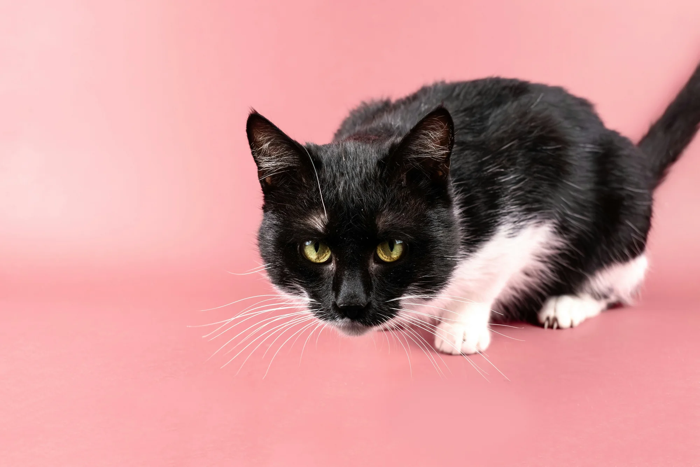
Fechamentovamos ver?
Teste final
Doze situações de loja, na ordem dos capítulos do guia. Responda pensando no que você faria lá dentro.
Teste final
Teste rápido
Amanhã você volta a uma loja que visitou há 15 dias. O que faz antes de sair?
A visita começa antes da porta. Com objetivo, pendências e material certo, você usa melhor o tempo na loja e resolve o que ficou aberto. (Capítulo 2)
Teste final
Teste rápido
Uma loja comprou 12 caixas de Top Dog do distribuidor há dois meses e ainda tem 10 na prateleira de baixo. O que está acontecendo?
Sell-in é a loja comprando. Sell-out é o tutor levando para casa. Produto parado não gira, e a loja não faz pedido novo. (Capítulo 3)
Teste final
Teste rápido
Ao repor a prateleira de Top Dog, onde ficam as caixas com a validade mais próxima?
É o FIFO: primeiro que entra, primeiro que sai. Validade mais próxima na frente evita produto vencido na prateleira. (Capítulo 4)
Teste final
Teste rápido
A loja autorizou um adesivo de chão que aponta para a farmácia. Onde ele pode ir?
O adesivo mostra o caminho até um produto que o tutor não vê da porta. Em piso molhado ou na clínica, ele descola e pode fazer alguém tropeçar. (Capítulo 5)
Teste final
Teste rápido
Um wobbler de WellPET na área de coleiras e guias, com o produto na farmácia, é um exemplo de quê?
O material vai até o tutor em outra área e o produto continua no ponto natural. Cross selling seria juntar dois produtos que se completam no uso. (Capítulo 6)
Teste final
Teste rápido
Você montou um display de chão com Herbalvet T.A. e a gôndola de higiene ficou com um buraco. O que faz?
O ponto natural vem antes. O tutor procura o produto no lugar de sempre, e o ponto extra soma sem tirar nada dele. (Capítulo 7)
Teste final
Teste rápido
Você chega a um petshop pela primeira vez e o balconista está atendendo um tutor. O que faz?
Você é convidado na loja. Esperar e se apresentar evita que a equipe estranhe alguém mexendo na prateleira sem dizer quem é. (Capítulo 8)
Teste final
Teste rápido
Na hora da foto de antes, uma cliente está escolhendo produto bem na frente da gôndola. O que você faz?
A foto da visita mostra a gôndola, sem pessoas. Cliente e funcionário não autorizaram aparecer na sua imagem, e a LGPD protege o rosto de cada um. (Capítulo 9)
Teste final
Teste rápido
Você quer instalar uma régua de gôndola numa loja que ainda não conhece. O que faz antes?
Quem decide muda de uma loja para outra: pode ser o dono, o gerente ou o veterinário responsável. Pergunte, anote o nome e peça a essa pessoa. (Capítulo 10)
Teste final
Teste rápido
Qual destas frases sobre o Banni 3 é uma vantagem?
A vantagem dá o motivo para escolher este produto. Aplicação na nuca é característica. Aplicar rápido, sem comprimido, é o benefício. (Capítulo 11)
Teste final
Teste rápido
Um tutor pergunta se pode dar o WellPET para o gato dele. O que você responde?
Cada herói traz a espécie escrita na embalagem. O WellPET é para cães. O que usar no gato é orientação do veterinário. (Capítulo 12)
Teste final
Teste rápido
Um colega sugere arrumar o bloco da Ourofino num canto separado das outras marcas, “para aparecer sozinho”. O que você responde?
O tutor procura a marca que já conhece. Encostada nela, a Ourofino entra no mesmo olhar. A exposição da concorrente é da loja, e você não mexe nela. (Capítulo 13)
Teste final
Seu resultado0
Errou alguma? Volte ao capítulo indicado na explicação e leia de novo antes da próxima visita.